try:
from astra.torch.models import ResNetClassifier
except:
%pip install git+https://github.com/sustainability-lab/ASTRAImports
import os
os.environ["CUDA_VISIBLE_DEVICES"] = "0"
import torch
import torch.nn as nn
import torch.nn.functional as F
import torch.optim as optim
import torchvision
import torchvision.models as models
import torchvision.transforms as transforms
import matplotlib.pyplot as plt
import os
import numpy as np
import pandas as pd
%matplotlib inline
# Retina display
%config InlineBackend.figure_format = 'retina'
# Confusion matrix
from sklearn.metrics import confusion_matrix
from sklearn.metrics import ConfusionMatrixDisplay
import torchsummary
from tqdm import tqdm
import umap
# ASTRA
from astra.torch.data import load_cifar_10
from astra.torch.utils import train_fn
from astra.torch.models import ResNetClassifier
# Netron, ONNX for model visualization
import netron
import onnxdevice = torch.device("cuda" if torch.cuda.is_available() else "cpu")
devicedevice(type='cuda')Dataset
dataset = load_cifar_10()
datasetFiles already downloaded and verified
Files already downloaded and verified
CIFAR-10 Dataset
length of dataset: 60000
shape of images: torch.Size([3, 32, 32])
len of classes: 10
classes: ['airplane', 'automobile', 'bird', 'cat', 'deer', 'dog', 'frog', 'horse', 'ship', 'truck']
dtype of images: torch.float32
dtype of labels: torch.int64
# Plot some images
plt.figure(figsize=(6, 6))
for i in range(25):
plt.subplot(5, 5, i+1)
plt.imshow(torch.einsum("chw->hwc", dataset.data[i].cpu()))
plt.axis('off')
plt.title(dataset.classes[dataset.targets[i]])
plt.tight_layout()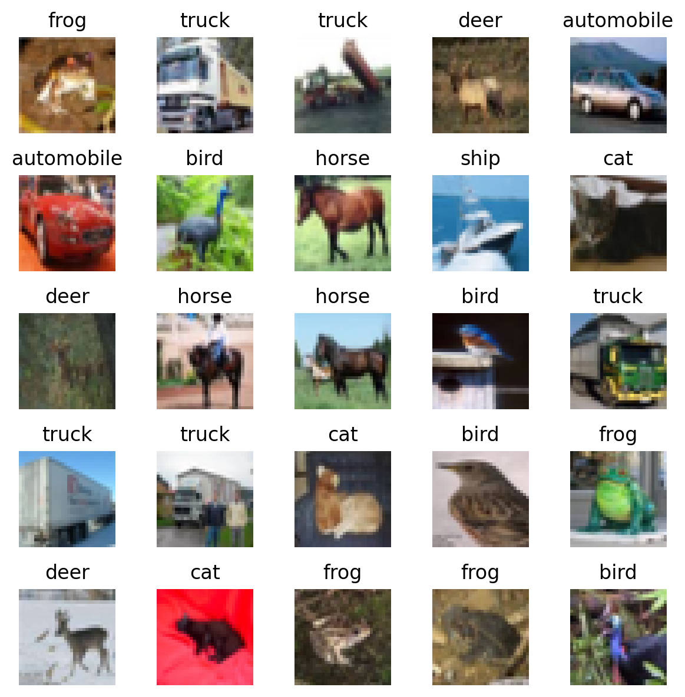
Train val test split
n_train = 1000
n_test = 20000
X = dataset.data
y = dataset.targets
print(X.shape)
print(X.shape, X.dtype)
print(X.min(), X.max())
print(y.shape, y.dtype)torch.Size([60000, 3, 32, 32])
torch.Size([60000, 3, 32, 32]) torch.float32
tensor(0.) tensor(1.)
torch.Size([60000]) torch.int64torch.manual_seed(0)
idx = torch.randperm(len(X))
train_idx = idx[:n_train]
pool_idx = idx[n_train:-n_test]
test_idx = idx[-n_test:]
print(len(train_idx), len(pool_idx), len(test_idx))1000 39000 20000resnet = ResNetClassifier(models.resnet18, models.ResNet18_Weights.DEFAULT, n_classes=10).to(device)resnetResNetClassifier(
(featurizer): ResNet(
(resnet): ResNet(
(conv1): Conv2d(3, 64, kernel_size=(7, 7), stride=(2, 2), padding=(3, 3), bias=False)
(bn1): BatchNorm2d(64, eps=1e-05, momentum=0.1, affine=True, track_running_stats=True)
(relu): ReLU(inplace=True)
(maxpool): MaxPool2d(kernel_size=3, stride=2, padding=1, dilation=1, ceil_mode=False)
(layer1): Sequential(
(0): BasicBlock(
(conv1): Conv2d(64, 64, kernel_size=(3, 3), stride=(1, 1), padding=(1, 1), bias=False)
(bn1): BatchNorm2d(64, eps=1e-05, momentum=0.1, affine=True, track_running_stats=True)
(relu): ReLU(inplace=True)
(conv2): Conv2d(64, 64, kernel_size=(3, 3), stride=(1, 1), padding=(1, 1), bias=False)
(bn2): BatchNorm2d(64, eps=1e-05, momentum=0.1, affine=True, track_running_stats=True)
)
(1): BasicBlock(
(conv1): Conv2d(64, 64, kernel_size=(3, 3), stride=(1, 1), padding=(1, 1), bias=False)
(bn1): BatchNorm2d(64, eps=1e-05, momentum=0.1, affine=True, track_running_stats=True)
(relu): ReLU(inplace=True)
(conv2): Conv2d(64, 64, kernel_size=(3, 3), stride=(1, 1), padding=(1, 1), bias=False)
(bn2): BatchNorm2d(64, eps=1e-05, momentum=0.1, affine=True, track_running_stats=True)
)
)
(layer2): Sequential(
(0): BasicBlock(
(conv1): Conv2d(64, 128, kernel_size=(3, 3), stride=(2, 2), padding=(1, 1), bias=False)
(bn1): BatchNorm2d(128, eps=1e-05, momentum=0.1, affine=True, track_running_stats=True)
(relu): ReLU(inplace=True)
(conv2): Conv2d(128, 128, kernel_size=(3, 3), stride=(1, 1), padding=(1, 1), bias=False)
(bn2): BatchNorm2d(128, eps=1e-05, momentum=0.1, affine=True, track_running_stats=True)
(downsample): Sequential(
(0): Conv2d(64, 128, kernel_size=(1, 1), stride=(2, 2), bias=False)
(1): BatchNorm2d(128, eps=1e-05, momentum=0.1, affine=True, track_running_stats=True)
)
)
(1): BasicBlock(
(conv1): Conv2d(128, 128, kernel_size=(3, 3), stride=(1, 1), padding=(1, 1), bias=False)
(bn1): BatchNorm2d(128, eps=1e-05, momentum=0.1, affine=True, track_running_stats=True)
(relu): ReLU(inplace=True)
(conv2): Conv2d(128, 128, kernel_size=(3, 3), stride=(1, 1), padding=(1, 1), bias=False)
(bn2): BatchNorm2d(128, eps=1e-05, momentum=0.1, affine=True, track_running_stats=True)
)
)
(layer3): Sequential(
(0): BasicBlock(
(conv1): Conv2d(128, 256, kernel_size=(3, 3), stride=(2, 2), padding=(1, 1), bias=False)
(bn1): BatchNorm2d(256, eps=1e-05, momentum=0.1, affine=True, track_running_stats=True)
(relu): ReLU(inplace=True)
(conv2): Conv2d(256, 256, kernel_size=(3, 3), stride=(1, 1), padding=(1, 1), bias=False)
(bn2): BatchNorm2d(256, eps=1e-05, momentum=0.1, affine=True, track_running_stats=True)
(downsample): Sequential(
(0): Conv2d(128, 256, kernel_size=(1, 1), stride=(2, 2), bias=False)
(1): BatchNorm2d(256, eps=1e-05, momentum=0.1, affine=True, track_running_stats=True)
)
)
(1): BasicBlock(
(conv1): Conv2d(256, 256, kernel_size=(3, 3), stride=(1, 1), padding=(1, 1), bias=False)
(bn1): BatchNorm2d(256, eps=1e-05, momentum=0.1, affine=True, track_running_stats=True)
(relu): ReLU(inplace=True)
(conv2): Conv2d(256, 256, kernel_size=(3, 3), stride=(1, 1), padding=(1, 1), bias=False)
(bn2): BatchNorm2d(256, eps=1e-05, momentum=0.1, affine=True, track_running_stats=True)
)
)
(layer4): Sequential(
(0): BasicBlock(
(conv1): Conv2d(256, 512, kernel_size=(3, 3), stride=(2, 2), padding=(1, 1), bias=False)
(bn1): BatchNorm2d(512, eps=1e-05, momentum=0.1, affine=True, track_running_stats=True)
(relu): ReLU(inplace=True)
(conv2): Conv2d(512, 512, kernel_size=(3, 3), stride=(1, 1), padding=(1, 1), bias=False)
(bn2): BatchNorm2d(512, eps=1e-05, momentum=0.1, affine=True, track_running_stats=True)
(downsample): Sequential(
(0): Conv2d(256, 512, kernel_size=(1, 1), stride=(2, 2), bias=False)
(1): BatchNorm2d(512, eps=1e-05, momentum=0.1, affine=True, track_running_stats=True)
)
)
(1): BasicBlock(
(conv1): Conv2d(512, 512, kernel_size=(3, 3), stride=(1, 1), padding=(1, 1), bias=False)
(bn1): BatchNorm2d(512, eps=1e-05, momentum=0.1, affine=True, track_running_stats=True)
(relu): ReLU(inplace=True)
(conv2): Conv2d(512, 512, kernel_size=(3, 3), stride=(1, 1), padding=(1, 1), bias=False)
(bn2): BatchNorm2d(512, eps=1e-05, momentum=0.1, affine=True, track_running_stats=True)
)
)
(avgpool): AdaptiveAvgPool2d(output_size=(1, 1))
(fc): Identity()
)
(flatten): Flatten(start_dim=1, end_dim=-1)
)
(classifier): MLPClassifier(
(featurizer): MLP(
(activation): ReLU()
(dropout): Dropout(p=0.0, inplace=True)
(input_layer): Linear(in_features=512, out_features=512, bias=True)
)
(classifier): Linear(in_features=512, out_features=10, bias=True)
)
)torchsummary.summary(resnet, (3, 32, 32))----------------------------------------------------------------
Layer (type) Output Shape Param #
================================================================
Conv2d-1 [-1, 64, 16, 16] 9,408
BatchNorm2d-2 [-1, 64, 16, 16] 128
ReLU-3 [-1, 64, 16, 16] 0
MaxPool2d-4 [-1, 64, 8, 8] 0
Conv2d-5 [-1, 64, 8, 8] 36,864
BatchNorm2d-6 [-1, 64, 8, 8] 128
ReLU-7 [-1, 64, 8, 8] 0
Conv2d-8 [-1, 64, 8, 8] 36,864
BatchNorm2d-9 [-1, 64, 8, 8] 128
ReLU-10 [-1, 64, 8, 8] 0
BasicBlock-11 [-1, 64, 8, 8] 0
Conv2d-12 [-1, 64, 8, 8] 36,864
BatchNorm2d-13 [-1, 64, 8, 8] 128
ReLU-14 [-1, 64, 8, 8] 0
Conv2d-15 [-1, 64, 8, 8] 36,864
BatchNorm2d-16 [-1, 64, 8, 8] 128
ReLU-17 [-1, 64, 8, 8] 0
BasicBlock-18 [-1, 64, 8, 8] 0
Conv2d-19 [-1, 128, 4, 4] 73,728
BatchNorm2d-20 [-1, 128, 4, 4] 256
ReLU-21 [-1, 128, 4, 4] 0
Conv2d-22 [-1, 128, 4, 4] 147,456
BatchNorm2d-23 [-1, 128, 4, 4] 256
Conv2d-24 [-1, 128, 4, 4] 8,192
BatchNorm2d-25 [-1, 128, 4, 4] 256
ReLU-26 [-1, 128, 4, 4] 0
BasicBlock-27 [-1, 128, 4, 4] 0
Conv2d-28 [-1, 128, 4, 4] 147,456
BatchNorm2d-29 [-1, 128, 4, 4] 256
ReLU-30 [-1, 128, 4, 4] 0
Conv2d-31 [-1, 128, 4, 4] 147,456
BatchNorm2d-32 [-1, 128, 4, 4] 256
ReLU-33 [-1, 128, 4, 4] 0
BasicBlock-34 [-1, 128, 4, 4] 0
Conv2d-35 [-1, 256, 2, 2] 294,912
BatchNorm2d-36 [-1, 256, 2, 2] 512
ReLU-37 [-1, 256, 2, 2] 0
Conv2d-38 [-1, 256, 2, 2] 589,824
BatchNorm2d-39 [-1, 256, 2, 2] 512
Conv2d-40 [-1, 256, 2, 2] 32,768
BatchNorm2d-41 [-1, 256, 2, 2] 512
ReLU-42 [-1, 256, 2, 2] 0
BasicBlock-43 [-1, 256, 2, 2] 0
Conv2d-44 [-1, 256, 2, 2] 589,824
BatchNorm2d-45 [-1, 256, 2, 2] 512
ReLU-46 [-1, 256, 2, 2] 0
Conv2d-47 [-1, 256, 2, 2] 589,824
BatchNorm2d-48 [-1, 256, 2, 2] 512
ReLU-49 [-1, 256, 2, 2] 0
BasicBlock-50 [-1, 256, 2, 2] 0
Conv2d-51 [-1, 512, 1, 1] 1,179,648
BatchNorm2d-52 [-1, 512, 1, 1] 1,024
ReLU-53 [-1, 512, 1, 1] 0
Conv2d-54 [-1, 512, 1, 1] 2,359,296
BatchNorm2d-55 [-1, 512, 1, 1] 1,024
Conv2d-56 [-1, 512, 1, 1] 131,072
BatchNorm2d-57 [-1, 512, 1, 1] 1,024
ReLU-58 [-1, 512, 1, 1] 0
BasicBlock-59 [-1, 512, 1, 1] 0
Conv2d-60 [-1, 512, 1, 1] 2,359,296
BatchNorm2d-61 [-1, 512, 1, 1] 1,024
ReLU-62 [-1, 512, 1, 1] 0
Conv2d-63 [-1, 512, 1, 1] 2,359,296
BatchNorm2d-64 [-1, 512, 1, 1] 1,024
ReLU-65 [-1, 512, 1, 1] 0
BasicBlock-66 [-1, 512, 1, 1] 0
AdaptiveAvgPool2d-67 [-1, 512, 1, 1] 0
Identity-68 [-1, 512] 0
ResNet-69 [-1, 512] 0
Flatten-70 [-1, 512] 0
ResNet-71 [-1, 512] 0
Linear-72 [-1, 512] 262,656
ReLU-73 [-1, 512] 0
Dropout-74 [-1, 512] 0
MLP-75 [-1, 512] 0
Linear-76 [-1, 10] 5,130
MLPClassifier-77 [-1, 10] 0
================================================================
Total params: 11,444,298
Trainable params: 11,444,298
Non-trainable params: 0
----------------------------------------------------------------
Input size (MB): 0.01
Forward/backward pass size (MB): 1.32
Params size (MB): 43.66
Estimated Total Size (MB): 44.98
----------------------------------------------------------------# Export to ONNX and visualize with Netron
dummy_input = torch.randn(1, 3, 32, 32).to(device)
torch.onnx.export(resnet, dummy_input, "resnet.onnx", verbose=True)
netron.start("resnet.onnx")Exported graph: graph(%input.1 : Float(1, 3, 32, 32, strides=[3072, 1024, 32, 1], requires_grad=0, device=cuda:0),
%classifier.featurizer.input_layer.weight : Float(512, 512, strides=[512, 1], requires_grad=1, device=cuda:0),
%classifier.featurizer.input_layer.bias : Float(512, strides=[1], requires_grad=1, device=cuda:0),
%classifier.classifier.weight : Float(10, 512, strides=[512, 1], requires_grad=1, device=cuda:0),
%classifier.classifier.bias : Float(10, strides=[1], requires_grad=1, device=cuda:0),
%onnx::Conv_198 : Float(64, 3, 7, 7, strides=[147, 49, 7, 1], requires_grad=0, device=cuda:0),
%onnx::Conv_199 : Float(64, strides=[1], requires_grad=0, device=cuda:0),
%onnx::Conv_201 : Float(64, 64, 3, 3, strides=[576, 9, 3, 1], requires_grad=0, device=cuda:0),
%onnx::Conv_202 : Float(64, strides=[1], requires_grad=0, device=cuda:0),
%onnx::Conv_204 : Float(64, 64, 3, 3, strides=[576, 9, 3, 1], requires_grad=0, device=cuda:0),
%onnx::Conv_205 : Float(64, strides=[1], requires_grad=0, device=cuda:0),
%onnx::Conv_207 : Float(64, 64, 3, 3, strides=[576, 9, 3, 1], requires_grad=0, device=cuda:0),
%onnx::Conv_208 : Float(64, strides=[1], requires_grad=0, device=cuda:0),
%onnx::Conv_210 : Float(64, 64, 3, 3, strides=[576, 9, 3, 1], requires_grad=0, device=cuda:0),
%onnx::Conv_211 : Float(64, strides=[1], requires_grad=0, device=cuda:0),
%onnx::Conv_213 : Float(128, 64, 3, 3, strides=[576, 9, 3, 1], requires_grad=0, device=cuda:0),
%onnx::Conv_214 : Float(128, strides=[1], requires_grad=0, device=cuda:0),
%onnx::Conv_216 : Float(128, 128, 3, 3, strides=[1152, 9, 3, 1], requires_grad=0, device=cuda:0),
%onnx::Conv_217 : Float(128, strides=[1], requires_grad=0, device=cuda:0),
%onnx::Conv_219 : Float(128, 64, 1, 1, strides=[64, 1, 1, 1], requires_grad=0, device=cuda:0),
%onnx::Conv_220 : Float(128, strides=[1], requires_grad=0, device=cuda:0),
%onnx::Conv_222 : Float(128, 128, 3, 3, strides=[1152, 9, 3, 1], requires_grad=0, device=cuda:0),
%onnx::Conv_223 : Float(128, strides=[1], requires_grad=0, device=cuda:0),
%onnx::Conv_225 : Float(128, 128, 3, 3, strides=[1152, 9, 3, 1], requires_grad=0, device=cuda:0),
%onnx::Conv_226 : Float(128, strides=[1], requires_grad=0, device=cuda:0),
%onnx::Conv_228 : Float(256, 128, 3, 3, strides=[1152, 9, 3, 1], requires_grad=0, device=cuda:0),
%onnx::Conv_229 : Float(256, strides=[1], requires_grad=0, device=cuda:0),
%onnx::Conv_231 : Float(256, 256, 3, 3, strides=[2304, 9, 3, 1], requires_grad=0, device=cuda:0),
%onnx::Conv_232 : Float(256, strides=[1], requires_grad=0, device=cuda:0),
%onnx::Conv_234 : Float(256, 128, 1, 1, strides=[128, 1, 1, 1], requires_grad=0, device=cuda:0),
%onnx::Conv_235 : Float(256, strides=[1], requires_grad=0, device=cuda:0),
%onnx::Conv_237 : Float(256, 256, 3, 3, strides=[2304, 9, 3, 1], requires_grad=0, device=cuda:0),
%onnx::Conv_238 : Float(256, strides=[1], requires_grad=0, device=cuda:0),
%onnx::Conv_240 : Float(256, 256, 3, 3, strides=[2304, 9, 3, 1], requires_grad=0, device=cuda:0),
%onnx::Conv_241 : Float(256, strides=[1], requires_grad=0, device=cuda:0),
%onnx::Conv_243 : Float(512, 256, 3, 3, strides=[2304, 9, 3, 1], requires_grad=0, device=cuda:0),
%onnx::Conv_244 : Float(512, strides=[1], requires_grad=0, device=cuda:0),
%onnx::Conv_246 : Float(512, 512, 3, 3, strides=[4608, 9, 3, 1], requires_grad=0, device=cuda:0),
%onnx::Conv_247 : Float(512, strides=[1], requires_grad=0, device=cuda:0),
%onnx::Conv_249 : Float(512, 256, 1, 1, strides=[256, 1, 1, 1], requires_grad=0, device=cuda:0),
%onnx::Conv_250 : Float(512, strides=[1], requires_grad=0, device=cuda:0),
%onnx::Conv_252 : Float(512, 512, 3, 3, strides=[4608, 9, 3, 1], requires_grad=0, device=cuda:0),
%onnx::Conv_253 : Float(512, strides=[1], requires_grad=0, device=cuda:0),
%onnx::Conv_255 : Float(512, 512, 3, 3, strides=[4608, 9, 3, 1], requires_grad=0, device=cuda:0),
%onnx::Conv_256 : Float(512, strides=[1], requires_grad=0, device=cuda:0)):
%/featurizer/resnet/conv1/Conv_output_0 : Float(1, 64, 16, 16, strides=[16384, 256, 16, 1], requires_grad=1, device=cuda:0) = onnx::Conv[dilations=[1, 1], group=1, kernel_shape=[7, 7], pads=[3, 3, 3, 3], strides=[2, 2], onnx_name="/featurizer/resnet/conv1/Conv"](%input.1, %onnx::Conv_198, %onnx::Conv_199), scope: astra.torch.models.ResNetClassifier::/astra.torch.models.ResNet::featurizer/torchvision.models.resnet.ResNet::resnet/torch.nn.modules.conv.Conv2d::conv1 # /home/nipun.batra/miniforge3/lib/python3.9/site-packages/torch/nn/modules/conv.py:459:0
%/featurizer/resnet/relu/Relu_output_0 : Float(1, 64, 16, 16, strides=[16384, 256, 16, 1], requires_grad=1, device=cuda:0) = onnx::Relu[onnx_name="/featurizer/resnet/relu/Relu"](%/featurizer/resnet/conv1/Conv_output_0), scope: astra.torch.models.ResNetClassifier::/astra.torch.models.ResNet::featurizer/torchvision.models.resnet.ResNet::resnet/torch.nn.modules.activation.ReLU::relu # /home/nipun.batra/miniforge3/lib/python3.9/site-packages/torch/nn/functional.py:1455:0
%/featurizer/resnet/maxpool/MaxPool_output_0 : Float(1, 64, 8, 8, strides=[4096, 64, 8, 1], requires_grad=1, device=cuda:0) = onnx::MaxPool[ceil_mode=0, kernel_shape=[3, 3], pads=[1, 1, 1, 1], strides=[2, 2], onnx_name="/featurizer/resnet/maxpool/MaxPool"](%/featurizer/resnet/relu/Relu_output_0), scope: astra.torch.models.ResNetClassifier::/astra.torch.models.ResNet::featurizer/torchvision.models.resnet.ResNet::resnet/torch.nn.modules.pooling.MaxPool2d::maxpool # /home/nipun.batra/miniforge3/lib/python3.9/site-packages/torch/nn/functional.py:782:0
%/featurizer/resnet/layer1/layer1.0/conv1/Conv_output_0 : Float(1, 64, 8, 8, strides=[4096, 64, 8, 1], requires_grad=1, device=cuda:0) = onnx::Conv[dilations=[1, 1], group=1, kernel_shape=[3, 3], pads=[1, 1, 1, 1], strides=[1, 1], onnx_name="/featurizer/resnet/layer1/layer1.0/conv1/Conv"](%/featurizer/resnet/maxpool/MaxPool_output_0, %onnx::Conv_201, %onnx::Conv_202), scope: astra.torch.models.ResNetClassifier::/astra.torch.models.ResNet::featurizer/torchvision.models.resnet.ResNet::resnet/torch.nn.modules.container.Sequential::layer1/torchvision.models.resnet.BasicBlock::layer1.0/torch.nn.modules.conv.Conv2d::conv1 # /home/nipun.batra/miniforge3/lib/python3.9/site-packages/torch/nn/modules/conv.py:459:0
%/featurizer/resnet/layer1/layer1.0/relu/Relu_output_0 : Float(1, 64, 8, 8, strides=[4096, 64, 8, 1], requires_grad=1, device=cuda:0) = onnx::Relu[onnx_name="/featurizer/resnet/layer1/layer1.0/relu/Relu"](%/featurizer/resnet/layer1/layer1.0/conv1/Conv_output_0), scope: astra.torch.models.ResNetClassifier::/astra.torch.models.ResNet::featurizer/torchvision.models.resnet.ResNet::resnet/torch.nn.modules.container.Sequential::layer1/torchvision.models.resnet.BasicBlock::layer1.0/torch.nn.modules.activation.ReLU::relu # /home/nipun.batra/miniforge3/lib/python3.9/site-packages/torch/nn/functional.py:1455:0
%/featurizer/resnet/layer1/layer1.0/conv2/Conv_output_0 : Float(1, 64, 8, 8, strides=[4096, 64, 8, 1], requires_grad=1, device=cuda:0) = onnx::Conv[dilations=[1, 1], group=1, kernel_shape=[3, 3], pads=[1, 1, 1, 1], strides=[1, 1], onnx_name="/featurizer/resnet/layer1/layer1.0/conv2/Conv"](%/featurizer/resnet/layer1/layer1.0/relu/Relu_output_0, %onnx::Conv_204, %onnx::Conv_205), scope: astra.torch.models.ResNetClassifier::/astra.torch.models.ResNet::featurizer/torchvision.models.resnet.ResNet::resnet/torch.nn.modules.container.Sequential::layer1/torchvision.models.resnet.BasicBlock::layer1.0/torch.nn.modules.conv.Conv2d::conv2 # /home/nipun.batra/miniforge3/lib/python3.9/site-packages/torch/nn/modules/conv.py:459:0
%/featurizer/resnet/layer1/layer1.0/Add_output_0 : Float(1, 64, 8, 8, strides=[4096, 64, 8, 1], requires_grad=1, device=cuda:0) = onnx::Add[onnx_name="/featurizer/resnet/layer1/layer1.0/Add"](%/featurizer/resnet/layer1/layer1.0/conv2/Conv_output_0, %/featurizer/resnet/maxpool/MaxPool_output_0), scope: astra.torch.models.ResNetClassifier::/astra.torch.models.ResNet::featurizer/torchvision.models.resnet.ResNet::resnet/torch.nn.modules.container.Sequential::layer1/torchvision.models.resnet.BasicBlock::layer1.0 # /home/nipun.batra/miniforge3/lib/python3.9/site-packages/torchvision/models/resnet.py:102:0
%/featurizer/resnet/layer1/layer1.0/relu_1/Relu_output_0 : Float(1, 64, 8, 8, strides=[4096, 64, 8, 1], requires_grad=1, device=cuda:0) = onnx::Relu[onnx_name="/featurizer/resnet/layer1/layer1.0/relu_1/Relu"](%/featurizer/resnet/layer1/layer1.0/Add_output_0), scope: astra.torch.models.ResNetClassifier::/astra.torch.models.ResNet::featurizer/torchvision.models.resnet.ResNet::resnet/torch.nn.modules.container.Sequential::layer1/torchvision.models.resnet.BasicBlock::layer1.0/torch.nn.modules.activation.ReLU::relu # /home/nipun.batra/miniforge3/lib/python3.9/site-packages/torch/nn/functional.py:1455:0
%/featurizer/resnet/layer1/layer1.1/conv1/Conv_output_0 : Float(1, 64, 8, 8, strides=[4096, 64, 8, 1], requires_grad=1, device=cuda:0) = onnx::Conv[dilations=[1, 1], group=1, kernel_shape=[3, 3], pads=[1, 1, 1, 1], strides=[1, 1], onnx_name="/featurizer/resnet/layer1/layer1.1/conv1/Conv"](%/featurizer/resnet/layer1/layer1.0/relu_1/Relu_output_0, %onnx::Conv_207, %onnx::Conv_208), scope: astra.torch.models.ResNetClassifier::/astra.torch.models.ResNet::featurizer/torchvision.models.resnet.ResNet::resnet/torch.nn.modules.container.Sequential::layer1/torchvision.models.resnet.BasicBlock::layer1.1/torch.nn.modules.conv.Conv2d::conv1 # /home/nipun.batra/miniforge3/lib/python3.9/site-packages/torch/nn/modules/conv.py:459:0
%/featurizer/resnet/layer1/layer1.1/relu/Relu_output_0 : Float(1, 64, 8, 8, strides=[4096, 64, 8, 1], requires_grad=1, device=cuda:0) = onnx::Relu[onnx_name="/featurizer/resnet/layer1/layer1.1/relu/Relu"](%/featurizer/resnet/layer1/layer1.1/conv1/Conv_output_0), scope: astra.torch.models.ResNetClassifier::/astra.torch.models.ResNet::featurizer/torchvision.models.resnet.ResNet::resnet/torch.nn.modules.container.Sequential::layer1/torchvision.models.resnet.BasicBlock::layer1.1/torch.nn.modules.activation.ReLU::relu # /home/nipun.batra/miniforge3/lib/python3.9/site-packages/torch/nn/functional.py:1455:0
%/featurizer/resnet/layer1/layer1.1/conv2/Conv_output_0 : Float(1, 64, 8, 8, strides=[4096, 64, 8, 1], requires_grad=1, device=cuda:0) = onnx::Conv[dilations=[1, 1], group=1, kernel_shape=[3, 3], pads=[1, 1, 1, 1], strides=[1, 1], onnx_name="/featurizer/resnet/layer1/layer1.1/conv2/Conv"](%/featurizer/resnet/layer1/layer1.1/relu/Relu_output_0, %onnx::Conv_210, %onnx::Conv_211), scope: astra.torch.models.ResNetClassifier::/astra.torch.models.ResNet::featurizer/torchvision.models.resnet.ResNet::resnet/torch.nn.modules.container.Sequential::layer1/torchvision.models.resnet.BasicBlock::layer1.1/torch.nn.modules.conv.Conv2d::conv2 # /home/nipun.batra/miniforge3/lib/python3.9/site-packages/torch/nn/modules/conv.py:459:0
%/featurizer/resnet/layer1/layer1.1/Add_output_0 : Float(1, 64, 8, 8, strides=[4096, 64, 8, 1], requires_grad=1, device=cuda:0) = onnx::Add[onnx_name="/featurizer/resnet/layer1/layer1.1/Add"](%/featurizer/resnet/layer1/layer1.1/conv2/Conv_output_0, %/featurizer/resnet/layer1/layer1.0/relu_1/Relu_output_0), scope: astra.torch.models.ResNetClassifier::/astra.torch.models.ResNet::featurizer/torchvision.models.resnet.ResNet::resnet/torch.nn.modules.container.Sequential::layer1/torchvision.models.resnet.BasicBlock::layer1.1 # /home/nipun.batra/miniforge3/lib/python3.9/site-packages/torchvision/models/resnet.py:102:0
%/featurizer/resnet/layer1/layer1.1/relu_1/Relu_output_0 : Float(1, 64, 8, 8, strides=[4096, 64, 8, 1], requires_grad=1, device=cuda:0) = onnx::Relu[onnx_name="/featurizer/resnet/layer1/layer1.1/relu_1/Relu"](%/featurizer/resnet/layer1/layer1.1/Add_output_0), scope: astra.torch.models.ResNetClassifier::/astra.torch.models.ResNet::featurizer/torchvision.models.resnet.ResNet::resnet/torch.nn.modules.container.Sequential::layer1/torchvision.models.resnet.BasicBlock::layer1.1/torch.nn.modules.activation.ReLU::relu # /home/nipun.batra/miniforge3/lib/python3.9/site-packages/torch/nn/functional.py:1455:0
%/featurizer/resnet/layer2/layer2.0/conv1/Conv_output_0 : Float(1, 128, 4, 4, strides=[2048, 16, 4, 1], requires_grad=1, device=cuda:0) = onnx::Conv[dilations=[1, 1], group=1, kernel_shape=[3, 3], pads=[1, 1, 1, 1], strides=[2, 2], onnx_name="/featurizer/resnet/layer2/layer2.0/conv1/Conv"](%/featurizer/resnet/layer1/layer1.1/relu_1/Relu_output_0, %onnx::Conv_213, %onnx::Conv_214), scope: astra.torch.models.ResNetClassifier::/astra.torch.models.ResNet::featurizer/torchvision.models.resnet.ResNet::resnet/torch.nn.modules.container.Sequential::layer2/torchvision.models.resnet.BasicBlock::layer2.0/torch.nn.modules.conv.Conv2d::conv1 # /home/nipun.batra/miniforge3/lib/python3.9/site-packages/torch/nn/modules/conv.py:459:0
%/featurizer/resnet/layer2/layer2.0/relu/Relu_output_0 : Float(1, 128, 4, 4, strides=[2048, 16, 4, 1], requires_grad=1, device=cuda:0) = onnx::Relu[onnx_name="/featurizer/resnet/layer2/layer2.0/relu/Relu"](%/featurizer/resnet/layer2/layer2.0/conv1/Conv_output_0), scope: astra.torch.models.ResNetClassifier::/astra.torch.models.ResNet::featurizer/torchvision.models.resnet.ResNet::resnet/torch.nn.modules.container.Sequential::layer2/torchvision.models.resnet.BasicBlock::layer2.0/torch.nn.modules.activation.ReLU::relu # /home/nipun.batra/miniforge3/lib/python3.9/site-packages/torch/nn/functional.py:1455:0
%/featurizer/resnet/layer2/layer2.0/conv2/Conv_output_0 : Float(1, 128, 4, 4, strides=[2048, 16, 4, 1], requires_grad=1, device=cuda:0) = onnx::Conv[dilations=[1, 1], group=1, kernel_shape=[3, 3], pads=[1, 1, 1, 1], strides=[1, 1], onnx_name="/featurizer/resnet/layer2/layer2.0/conv2/Conv"](%/featurizer/resnet/layer2/layer2.0/relu/Relu_output_0, %onnx::Conv_216, %onnx::Conv_217), scope: astra.torch.models.ResNetClassifier::/astra.torch.models.ResNet::featurizer/torchvision.models.resnet.ResNet::resnet/torch.nn.modules.container.Sequential::layer2/torchvision.models.resnet.BasicBlock::layer2.0/torch.nn.modules.conv.Conv2d::conv2 # /home/nipun.batra/miniforge3/lib/python3.9/site-packages/torch/nn/modules/conv.py:459:0
%/featurizer/resnet/layer2/layer2.0/downsample/downsample.0/Conv_output_0 : Float(1, 128, 4, 4, strides=[2048, 16, 4, 1], requires_grad=1, device=cuda:0) = onnx::Conv[dilations=[1, 1], group=1, kernel_shape=[1, 1], pads=[0, 0, 0, 0], strides=[2, 2], onnx_name="/featurizer/resnet/layer2/layer2.0/downsample/downsample.0/Conv"](%/featurizer/resnet/layer1/layer1.1/relu_1/Relu_output_0, %onnx::Conv_219, %onnx::Conv_220), scope: astra.torch.models.ResNetClassifier::/astra.torch.models.ResNet::featurizer/torchvision.models.resnet.ResNet::resnet/torch.nn.modules.container.Sequential::layer2/torchvision.models.resnet.BasicBlock::layer2.0/torch.nn.modules.container.Sequential::downsample/torch.nn.modules.conv.Conv2d::downsample.0 # /home/nipun.batra/miniforge3/lib/python3.9/site-packages/torch/nn/modules/conv.py:459:0
%/featurizer/resnet/layer2/layer2.0/Add_output_0 : Float(1, 128, 4, 4, strides=[2048, 16, 4, 1], requires_grad=1, device=cuda:0) = onnx::Add[onnx_name="/featurizer/resnet/layer2/layer2.0/Add"](%/featurizer/resnet/layer2/layer2.0/conv2/Conv_output_0, %/featurizer/resnet/layer2/layer2.0/downsample/downsample.0/Conv_output_0), scope: astra.torch.models.ResNetClassifier::/astra.torch.models.ResNet::featurizer/torchvision.models.resnet.ResNet::resnet/torch.nn.modules.container.Sequential::layer2/torchvision.models.resnet.BasicBlock::layer2.0 # /home/nipun.batra/miniforge3/lib/python3.9/site-packages/torchvision/models/resnet.py:102:0
%/featurizer/resnet/layer2/layer2.0/relu_1/Relu_output_0 : Float(1, 128, 4, 4, strides=[2048, 16, 4, 1], requires_grad=1, device=cuda:0) = onnx::Relu[onnx_name="/featurizer/resnet/layer2/layer2.0/relu_1/Relu"](%/featurizer/resnet/layer2/layer2.0/Add_output_0), scope: astra.torch.models.ResNetClassifier::/astra.torch.models.ResNet::featurizer/torchvision.models.resnet.ResNet::resnet/torch.nn.modules.container.Sequential::layer2/torchvision.models.resnet.BasicBlock::layer2.0/torch.nn.modules.activation.ReLU::relu # /home/nipun.batra/miniforge3/lib/python3.9/site-packages/torch/nn/functional.py:1455:0
%/featurizer/resnet/layer2/layer2.1/conv1/Conv_output_0 : Float(1, 128, 4, 4, strides=[2048, 16, 4, 1], requires_grad=1, device=cuda:0) = onnx::Conv[dilations=[1, 1], group=1, kernel_shape=[3, 3], pads=[1, 1, 1, 1], strides=[1, 1], onnx_name="/featurizer/resnet/layer2/layer2.1/conv1/Conv"](%/featurizer/resnet/layer2/layer2.0/relu_1/Relu_output_0, %onnx::Conv_222, %onnx::Conv_223), scope: astra.torch.models.ResNetClassifier::/astra.torch.models.ResNet::featurizer/torchvision.models.resnet.ResNet::resnet/torch.nn.modules.container.Sequential::layer2/torchvision.models.resnet.BasicBlock::layer2.1/torch.nn.modules.conv.Conv2d::conv1 # /home/nipun.batra/miniforge3/lib/python3.9/site-packages/torch/nn/modules/conv.py:459:0
%/featurizer/resnet/layer2/layer2.1/relu/Relu_output_0 : Float(1, 128, 4, 4, strides=[2048, 16, 4, 1], requires_grad=1, device=cuda:0) = onnx::Relu[onnx_name="/featurizer/resnet/layer2/layer2.1/relu/Relu"](%/featurizer/resnet/layer2/layer2.1/conv1/Conv_output_0), scope: astra.torch.models.ResNetClassifier::/astra.torch.models.ResNet::featurizer/torchvision.models.resnet.ResNet::resnet/torch.nn.modules.container.Sequential::layer2/torchvision.models.resnet.BasicBlock::layer2.1/torch.nn.modules.activation.ReLU::relu # /home/nipun.batra/miniforge3/lib/python3.9/site-packages/torch/nn/functional.py:1455:0
%/featurizer/resnet/layer2/layer2.1/conv2/Conv_output_0 : Float(1, 128, 4, 4, strides=[2048, 16, 4, 1], requires_grad=1, device=cuda:0) = onnx::Conv[dilations=[1, 1], group=1, kernel_shape=[3, 3], pads=[1, 1, 1, 1], strides=[1, 1], onnx_name="/featurizer/resnet/layer2/layer2.1/conv2/Conv"](%/featurizer/resnet/layer2/layer2.1/relu/Relu_output_0, %onnx::Conv_225, %onnx::Conv_226), scope: astra.torch.models.ResNetClassifier::/astra.torch.models.ResNet::featurizer/torchvision.models.resnet.ResNet::resnet/torch.nn.modules.container.Sequential::layer2/torchvision.models.resnet.BasicBlock::layer2.1/torch.nn.modules.conv.Conv2d::conv2 # /home/nipun.batra/miniforge3/lib/python3.9/site-packages/torch/nn/modules/conv.py:459:0
%/featurizer/resnet/layer2/layer2.1/Add_output_0 : Float(1, 128, 4, 4, strides=[2048, 16, 4, 1], requires_grad=1, device=cuda:0) = onnx::Add[onnx_name="/featurizer/resnet/layer2/layer2.1/Add"](%/featurizer/resnet/layer2/layer2.1/conv2/Conv_output_0, %/featurizer/resnet/layer2/layer2.0/relu_1/Relu_output_0), scope: astra.torch.models.ResNetClassifier::/astra.torch.models.ResNet::featurizer/torchvision.models.resnet.ResNet::resnet/torch.nn.modules.container.Sequential::layer2/torchvision.models.resnet.BasicBlock::layer2.1 # /home/nipun.batra/miniforge3/lib/python3.9/site-packages/torchvision/models/resnet.py:102:0
%/featurizer/resnet/layer2/layer2.1/relu_1/Relu_output_0 : Float(1, 128, 4, 4, strides=[2048, 16, 4, 1], requires_grad=1, device=cuda:0) = onnx::Relu[onnx_name="/featurizer/resnet/layer2/layer2.1/relu_1/Relu"](%/featurizer/resnet/layer2/layer2.1/Add_output_0), scope: astra.torch.models.ResNetClassifier::/astra.torch.models.ResNet::featurizer/torchvision.models.resnet.ResNet::resnet/torch.nn.modules.container.Sequential::layer2/torchvision.models.resnet.BasicBlock::layer2.1/torch.nn.modules.activation.ReLU::relu # /home/nipun.batra/miniforge3/lib/python3.9/site-packages/torch/nn/functional.py:1455:0
%/featurizer/resnet/layer3/layer3.0/conv1/Conv_output_0 : Float(1, 256, 2, 2, strides=[1024, 4, 2, 1], requires_grad=1, device=cuda:0) = onnx::Conv[dilations=[1, 1], group=1, kernel_shape=[3, 3], pads=[1, 1, 1, 1], strides=[2, 2], onnx_name="/featurizer/resnet/layer3/layer3.0/conv1/Conv"](%/featurizer/resnet/layer2/layer2.1/relu_1/Relu_output_0, %onnx::Conv_228, %onnx::Conv_229), scope: astra.torch.models.ResNetClassifier::/astra.torch.models.ResNet::featurizer/torchvision.models.resnet.ResNet::resnet/torch.nn.modules.container.Sequential::layer3/torchvision.models.resnet.BasicBlock::layer3.0/torch.nn.modules.conv.Conv2d::conv1 # /home/nipun.batra/miniforge3/lib/python3.9/site-packages/torch/nn/modules/conv.py:459:0
%/featurizer/resnet/layer3/layer3.0/relu/Relu_output_0 : Float(1, 256, 2, 2, strides=[1024, 4, 2, 1], requires_grad=1, device=cuda:0) = onnx::Relu[onnx_name="/featurizer/resnet/layer3/layer3.0/relu/Relu"](%/featurizer/resnet/layer3/layer3.0/conv1/Conv_output_0), scope: astra.torch.models.ResNetClassifier::/astra.torch.models.ResNet::featurizer/torchvision.models.resnet.ResNet::resnet/torch.nn.modules.container.Sequential::layer3/torchvision.models.resnet.BasicBlock::layer3.0/torch.nn.modules.activation.ReLU::relu # /home/nipun.batra/miniforge3/lib/python3.9/site-packages/torch/nn/functional.py:1455:0
%/featurizer/resnet/layer3/layer3.0/conv2/Conv_output_0 : Float(1, 256, 2, 2, strides=[1024, 4, 2, 1], requires_grad=1, device=cuda:0) = onnx::Conv[dilations=[1, 1], group=1, kernel_shape=[3, 3], pads=[1, 1, 1, 1], strides=[1, 1], onnx_name="/featurizer/resnet/layer3/layer3.0/conv2/Conv"](%/featurizer/resnet/layer3/layer3.0/relu/Relu_output_0, %onnx::Conv_231, %onnx::Conv_232), scope: astra.torch.models.ResNetClassifier::/astra.torch.models.ResNet::featurizer/torchvision.models.resnet.ResNet::resnet/torch.nn.modules.container.Sequential::layer3/torchvision.models.resnet.BasicBlock::layer3.0/torch.nn.modules.conv.Conv2d::conv2 # /home/nipun.batra/miniforge3/lib/python3.9/site-packages/torch/nn/modules/conv.py:459:0
%/featurizer/resnet/layer3/layer3.0/downsample/downsample.0/Conv_output_0 : Float(1, 256, 2, 2, strides=[1024, 4, 2, 1], requires_grad=1, device=cuda:0) = onnx::Conv[dilations=[1, 1], group=1, kernel_shape=[1, 1], pads=[0, 0, 0, 0], strides=[2, 2], onnx_name="/featurizer/resnet/layer3/layer3.0/downsample/downsample.0/Conv"](%/featurizer/resnet/layer2/layer2.1/relu_1/Relu_output_0, %onnx::Conv_234, %onnx::Conv_235), scope: astra.torch.models.ResNetClassifier::/astra.torch.models.ResNet::featurizer/torchvision.models.resnet.ResNet::resnet/torch.nn.modules.container.Sequential::layer3/torchvision.models.resnet.BasicBlock::layer3.0/torch.nn.modules.container.Sequential::downsample/torch.nn.modules.conv.Conv2d::downsample.0 # /home/nipun.batra/miniforge3/lib/python3.9/site-packages/torch/nn/modules/conv.py:459:0
%/featurizer/resnet/layer3/layer3.0/Add_output_0 : Float(1, 256, 2, 2, strides=[1024, 4, 2, 1], requires_grad=1, device=cuda:0) = onnx::Add[onnx_name="/featurizer/resnet/layer3/layer3.0/Add"](%/featurizer/resnet/layer3/layer3.0/conv2/Conv_output_0, %/featurizer/resnet/layer3/layer3.0/downsample/downsample.0/Conv_output_0), scope: astra.torch.models.ResNetClassifier::/astra.torch.models.ResNet::featurizer/torchvision.models.resnet.ResNet::resnet/torch.nn.modules.container.Sequential::layer3/torchvision.models.resnet.BasicBlock::layer3.0 # /home/nipun.batra/miniforge3/lib/python3.9/site-packages/torchvision/models/resnet.py:102:0
%/featurizer/resnet/layer3/layer3.0/relu_1/Relu_output_0 : Float(1, 256, 2, 2, strides=[1024, 4, 2, 1], requires_grad=1, device=cuda:0) = onnx::Relu[onnx_name="/featurizer/resnet/layer3/layer3.0/relu_1/Relu"](%/featurizer/resnet/layer3/layer3.0/Add_output_0), scope: astra.torch.models.ResNetClassifier::/astra.torch.models.ResNet::featurizer/torchvision.models.resnet.ResNet::resnet/torch.nn.modules.container.Sequential::layer3/torchvision.models.resnet.BasicBlock::layer3.0/torch.nn.modules.activation.ReLU::relu # /home/nipun.batra/miniforge3/lib/python3.9/site-packages/torch/nn/functional.py:1455:0
%/featurizer/resnet/layer3/layer3.1/conv1/Conv_output_0 : Float(1, 256, 2, 2, strides=[1024, 4, 2, 1], requires_grad=1, device=cuda:0) = onnx::Conv[dilations=[1, 1], group=1, kernel_shape=[3, 3], pads=[1, 1, 1, 1], strides=[1, 1], onnx_name="/featurizer/resnet/layer3/layer3.1/conv1/Conv"](%/featurizer/resnet/layer3/layer3.0/relu_1/Relu_output_0, %onnx::Conv_237, %onnx::Conv_238), scope: astra.torch.models.ResNetClassifier::/astra.torch.models.ResNet::featurizer/torchvision.models.resnet.ResNet::resnet/torch.nn.modules.container.Sequential::layer3/torchvision.models.resnet.BasicBlock::layer3.1/torch.nn.modules.conv.Conv2d::conv1 # /home/nipun.batra/miniforge3/lib/python3.9/site-packages/torch/nn/modules/conv.py:459:0
%/featurizer/resnet/layer3/layer3.1/relu/Relu_output_0 : Float(1, 256, 2, 2, strides=[1024, 4, 2, 1], requires_grad=1, device=cuda:0) = onnx::Relu[onnx_name="/featurizer/resnet/layer3/layer3.1/relu/Relu"](%/featurizer/resnet/layer3/layer3.1/conv1/Conv_output_0), scope: astra.torch.models.ResNetClassifier::/astra.torch.models.ResNet::featurizer/torchvision.models.resnet.ResNet::resnet/torch.nn.modules.container.Sequential::layer3/torchvision.models.resnet.BasicBlock::layer3.1/torch.nn.modules.activation.ReLU::relu # /home/nipun.batra/miniforge3/lib/python3.9/site-packages/torch/nn/functional.py:1455:0
%/featurizer/resnet/layer3/layer3.1/conv2/Conv_output_0 : Float(1, 256, 2, 2, strides=[1024, 4, 2, 1], requires_grad=1, device=cuda:0) = onnx::Conv[dilations=[1, 1], group=1, kernel_shape=[3, 3], pads=[1, 1, 1, 1], strides=[1, 1], onnx_name="/featurizer/resnet/layer3/layer3.1/conv2/Conv"](%/featurizer/resnet/layer3/layer3.1/relu/Relu_output_0, %onnx::Conv_240, %onnx::Conv_241), scope: astra.torch.models.ResNetClassifier::/astra.torch.models.ResNet::featurizer/torchvision.models.resnet.ResNet::resnet/torch.nn.modules.container.Sequential::layer3/torchvision.models.resnet.BasicBlock::layer3.1/torch.nn.modules.conv.Conv2d::conv2 # /home/nipun.batra/miniforge3/lib/python3.9/site-packages/torch/nn/modules/conv.py:459:0
%/featurizer/resnet/layer3/layer3.1/Add_output_0 : Float(1, 256, 2, 2, strides=[1024, 4, 2, 1], requires_grad=1, device=cuda:0) = onnx::Add[onnx_name="/featurizer/resnet/layer3/layer3.1/Add"](%/featurizer/resnet/layer3/layer3.1/conv2/Conv_output_0, %/featurizer/resnet/layer3/layer3.0/relu_1/Relu_output_0), scope: astra.torch.models.ResNetClassifier::/astra.torch.models.ResNet::featurizer/torchvision.models.resnet.ResNet::resnet/torch.nn.modules.container.Sequential::layer3/torchvision.models.resnet.BasicBlock::layer3.1 # /home/nipun.batra/miniforge3/lib/python3.9/site-packages/torchvision/models/resnet.py:102:0
%/featurizer/resnet/layer3/layer3.1/relu_1/Relu_output_0 : Float(1, 256, 2, 2, strides=[1024, 4, 2, 1], requires_grad=1, device=cuda:0) = onnx::Relu[onnx_name="/featurizer/resnet/layer3/layer3.1/relu_1/Relu"](%/featurizer/resnet/layer3/layer3.1/Add_output_0), scope: astra.torch.models.ResNetClassifier::/astra.torch.models.ResNet::featurizer/torchvision.models.resnet.ResNet::resnet/torch.nn.modules.container.Sequential::layer3/torchvision.models.resnet.BasicBlock::layer3.1/torch.nn.modules.activation.ReLU::relu # /home/nipun.batra/miniforge3/lib/python3.9/site-packages/torch/nn/functional.py:1455:0
%/featurizer/resnet/layer4/layer4.0/conv1/Conv_output_0 : Float(1, 512, 1, 1, strides=[512, 1, 1, 1], requires_grad=1, device=cuda:0) = onnx::Conv[dilations=[1, 1], group=1, kernel_shape=[3, 3], pads=[1, 1, 1, 1], strides=[2, 2], onnx_name="/featurizer/resnet/layer4/layer4.0/conv1/Conv"](%/featurizer/resnet/layer3/layer3.1/relu_1/Relu_output_0, %onnx::Conv_243, %onnx::Conv_244), scope: astra.torch.models.ResNetClassifier::/astra.torch.models.ResNet::featurizer/torchvision.models.resnet.ResNet::resnet/torch.nn.modules.container.Sequential::layer4/torchvision.models.resnet.BasicBlock::layer4.0/torch.nn.modules.conv.Conv2d::conv1 # /home/nipun.batra/miniforge3/lib/python3.9/site-packages/torch/nn/modules/conv.py:459:0
%/featurizer/resnet/layer4/layer4.0/relu/Relu_output_0 : Float(1, 512, 1, 1, strides=[512, 1, 1, 1], requires_grad=1, device=cuda:0) = onnx::Relu[onnx_name="/featurizer/resnet/layer4/layer4.0/relu/Relu"](%/featurizer/resnet/layer4/layer4.0/conv1/Conv_output_0), scope: astra.torch.models.ResNetClassifier::/astra.torch.models.ResNet::featurizer/torchvision.models.resnet.ResNet::resnet/torch.nn.modules.container.Sequential::layer4/torchvision.models.resnet.BasicBlock::layer4.0/torch.nn.modules.activation.ReLU::relu # /home/nipun.batra/miniforge3/lib/python3.9/site-packages/torch/nn/functional.py:1455:0
%/featurizer/resnet/layer4/layer4.0/conv2/Conv_output_0 : Float(1, 512, 1, 1, strides=[512, 1, 1, 1], requires_grad=1, device=cuda:0) = onnx::Conv[dilations=[1, 1], group=1, kernel_shape=[3, 3], pads=[1, 1, 1, 1], strides=[1, 1], onnx_name="/featurizer/resnet/layer4/layer4.0/conv2/Conv"](%/featurizer/resnet/layer4/layer4.0/relu/Relu_output_0, %onnx::Conv_246, %onnx::Conv_247), scope: astra.torch.models.ResNetClassifier::/astra.torch.models.ResNet::featurizer/torchvision.models.resnet.ResNet::resnet/torch.nn.modules.container.Sequential::layer4/torchvision.models.resnet.BasicBlock::layer4.0/torch.nn.modules.conv.Conv2d::conv2 # /home/nipun.batra/miniforge3/lib/python3.9/site-packages/torch/nn/modules/conv.py:459:0
%/featurizer/resnet/layer4/layer4.0/downsample/downsample.0/Conv_output_0 : Float(1, 512, 1, 1, strides=[512, 1, 1, 1], requires_grad=1, device=cuda:0) = onnx::Conv[dilations=[1, 1], group=1, kernel_shape=[1, 1], pads=[0, 0, 0, 0], strides=[2, 2], onnx_name="/featurizer/resnet/layer4/layer4.0/downsample/downsample.0/Conv"](%/featurizer/resnet/layer3/layer3.1/relu_1/Relu_output_0, %onnx::Conv_249, %onnx::Conv_250), scope: astra.torch.models.ResNetClassifier::/astra.torch.models.ResNet::featurizer/torchvision.models.resnet.ResNet::resnet/torch.nn.modules.container.Sequential::layer4/torchvision.models.resnet.BasicBlock::layer4.0/torch.nn.modules.container.Sequential::downsample/torch.nn.modules.conv.Conv2d::downsample.0 # /home/nipun.batra/miniforge3/lib/python3.9/site-packages/torch/nn/modules/conv.py:459:0
%/featurizer/resnet/layer4/layer4.0/Add_output_0 : Float(1, 512, 1, 1, strides=[512, 1, 1, 1], requires_grad=1, device=cuda:0) = onnx::Add[onnx_name="/featurizer/resnet/layer4/layer4.0/Add"](%/featurizer/resnet/layer4/layer4.0/conv2/Conv_output_0, %/featurizer/resnet/layer4/layer4.0/downsample/downsample.0/Conv_output_0), scope: astra.torch.models.ResNetClassifier::/astra.torch.models.ResNet::featurizer/torchvision.models.resnet.ResNet::resnet/torch.nn.modules.container.Sequential::layer4/torchvision.models.resnet.BasicBlock::layer4.0 # /home/nipun.batra/miniforge3/lib/python3.9/site-packages/torchvision/models/resnet.py:102:0
%/featurizer/resnet/layer4/layer4.0/relu_1/Relu_output_0 : Float(1, 512, 1, 1, strides=[512, 1, 1, 1], requires_grad=1, device=cuda:0) = onnx::Relu[onnx_name="/featurizer/resnet/layer4/layer4.0/relu_1/Relu"](%/featurizer/resnet/layer4/layer4.0/Add_output_0), scope: astra.torch.models.ResNetClassifier::/astra.torch.models.ResNet::featurizer/torchvision.models.resnet.ResNet::resnet/torch.nn.modules.container.Sequential::layer4/torchvision.models.resnet.BasicBlock::layer4.0/torch.nn.modules.activation.ReLU::relu # /home/nipun.batra/miniforge3/lib/python3.9/site-packages/torch/nn/functional.py:1455:0
%/featurizer/resnet/layer4/layer4.1/conv1/Conv_output_0 : Float(1, 512, 1, 1, strides=[512, 1, 1, 1], requires_grad=1, device=cuda:0) = onnx::Conv[dilations=[1, 1], group=1, kernel_shape=[3, 3], pads=[1, 1, 1, 1], strides=[1, 1], onnx_name="/featurizer/resnet/layer4/layer4.1/conv1/Conv"](%/featurizer/resnet/layer4/layer4.0/relu_1/Relu_output_0, %onnx::Conv_252, %onnx::Conv_253), scope: astra.torch.models.ResNetClassifier::/astra.torch.models.ResNet::featurizer/torchvision.models.resnet.ResNet::resnet/torch.nn.modules.container.Sequential::layer4/torchvision.models.resnet.BasicBlock::layer4.1/torch.nn.modules.conv.Conv2d::conv1 # /home/nipun.batra/miniforge3/lib/python3.9/site-packages/torch/nn/modules/conv.py:459:0
%/featurizer/resnet/layer4/layer4.1/relu/Relu_output_0 : Float(1, 512, 1, 1, strides=[512, 1, 1, 1], requires_grad=1, device=cuda:0) = onnx::Relu[onnx_name="/featurizer/resnet/layer4/layer4.1/relu/Relu"](%/featurizer/resnet/layer4/layer4.1/conv1/Conv_output_0), scope: astra.torch.models.ResNetClassifier::/astra.torch.models.ResNet::featurizer/torchvision.models.resnet.ResNet::resnet/torch.nn.modules.container.Sequential::layer4/torchvision.models.resnet.BasicBlock::layer4.1/torch.nn.modules.activation.ReLU::relu # /home/nipun.batra/miniforge3/lib/python3.9/site-packages/torch/nn/functional.py:1455:0
%/featurizer/resnet/layer4/layer4.1/conv2/Conv_output_0 : Float(1, 512, 1, 1, strides=[512, 1, 1, 1], requires_grad=1, device=cuda:0) = onnx::Conv[dilations=[1, 1], group=1, kernel_shape=[3, 3], pads=[1, 1, 1, 1], strides=[1, 1], onnx_name="/featurizer/resnet/layer4/layer4.1/conv2/Conv"](%/featurizer/resnet/layer4/layer4.1/relu/Relu_output_0, %onnx::Conv_255, %onnx::Conv_256), scope: astra.torch.models.ResNetClassifier::/astra.torch.models.ResNet::featurizer/torchvision.models.resnet.ResNet::resnet/torch.nn.modules.container.Sequential::layer4/torchvision.models.resnet.BasicBlock::layer4.1/torch.nn.modules.conv.Conv2d::conv2 # /home/nipun.batra/miniforge3/lib/python3.9/site-packages/torch/nn/modules/conv.py:459:0
%/featurizer/resnet/layer4/layer4.1/Add_output_0 : Float(1, 512, 1, 1, strides=[512, 1, 1, 1], requires_grad=1, device=cuda:0) = onnx::Add[onnx_name="/featurizer/resnet/layer4/layer4.1/Add"](%/featurizer/resnet/layer4/layer4.1/conv2/Conv_output_0, %/featurizer/resnet/layer4/layer4.0/relu_1/Relu_output_0), scope: astra.torch.models.ResNetClassifier::/astra.torch.models.ResNet::featurizer/torchvision.models.resnet.ResNet::resnet/torch.nn.modules.container.Sequential::layer4/torchvision.models.resnet.BasicBlock::layer4.1 # /home/nipun.batra/miniforge3/lib/python3.9/site-packages/torchvision/models/resnet.py:102:0
%/featurizer/resnet/layer4/layer4.1/relu_1/Relu_output_0 : Float(1, 512, 1, 1, strides=[512, 1, 1, 1], requires_grad=1, device=cuda:0) = onnx::Relu[onnx_name="/featurizer/resnet/layer4/layer4.1/relu_1/Relu"](%/featurizer/resnet/layer4/layer4.1/Add_output_0), scope: astra.torch.models.ResNetClassifier::/astra.torch.models.ResNet::featurizer/torchvision.models.resnet.ResNet::resnet/torch.nn.modules.container.Sequential::layer4/torchvision.models.resnet.BasicBlock::layer4.1/torch.nn.modules.activation.ReLU::relu # /home/nipun.batra/miniforge3/lib/python3.9/site-packages/torch/nn/functional.py:1455:0
%/featurizer/resnet/avgpool/GlobalAveragePool_output_0 : Float(1, 512, 1, 1, strides=[512, 1, 1, 1], requires_grad=1, device=cuda:0) = onnx::GlobalAveragePool[onnx_name="/featurizer/resnet/avgpool/GlobalAveragePool"](%/featurizer/resnet/layer4/layer4.1/relu_1/Relu_output_0), scope: astra.torch.models.ResNetClassifier::/astra.torch.models.ResNet::featurizer/torchvision.models.resnet.ResNet::resnet/torch.nn.modules.pooling.AdaptiveAvgPool2d::avgpool # /home/nipun.batra/miniforge3/lib/python3.9/site-packages/torch/nn/functional.py:1214:0
%/featurizer/resnet/Flatten_output_0 : Float(1, 512, strides=[512, 1], requires_grad=1, device=cuda:0) = onnx::Flatten[axis=1, onnx_name="/featurizer/resnet/Flatten"](%/featurizer/resnet/avgpool/GlobalAveragePool_output_0), scope: astra.torch.models.ResNetClassifier::/astra.torch.models.ResNet::featurizer/torchvision.models.resnet.ResNet::resnet # /home/nipun.batra/miniforge3/lib/python3.9/site-packages/torchvision/models/resnet.py:279:0
%/featurizer/flatten/Flatten_output_0 : Float(1, 512, strides=[512, 1], requires_grad=1, device=cuda:0) = onnx::Flatten[axis=1, onnx_name="/featurizer/flatten/Flatten"](%/featurizer/resnet/Flatten_output_0), scope: astra.torch.models.ResNetClassifier::/astra.torch.models.ResNet::featurizer/torch.nn.modules.flatten.Flatten::flatten # /home/nipun.batra/miniforge3/lib/python3.9/site-packages/torch/nn/modules/flatten.py:46:0
%/classifier/featurizer/input_layer/Gemm_output_0 : Float(1, 512, strides=[512, 1], requires_grad=1, device=cuda:0) = onnx::Gemm[alpha=1., beta=1., transB=1, onnx_name="/classifier/featurizer/input_layer/Gemm"](%/featurizer/flatten/Flatten_output_0, %classifier.featurizer.input_layer.weight, %classifier.featurizer.input_layer.bias), scope: astra.torch.models.ResNetClassifier::/astra.torch.models.MLPClassifier::classifier/astra.torch.models.MLP::featurizer/torch.nn.modules.linear.Linear::input_layer # /home/nipun.batra/miniforge3/lib/python3.9/site-packages/torch/nn/modules/linear.py:114:0
%/classifier/featurizer/activation/Relu_output_0 : Float(1, 512, strides=[512, 1], requires_grad=1, device=cuda:0) = onnx::Relu[onnx_name="/classifier/featurizer/activation/Relu"](%/classifier/featurizer/input_layer/Gemm_output_0), scope: astra.torch.models.ResNetClassifier::/astra.torch.models.MLPClassifier::classifier/astra.torch.models.MLP::featurizer/torch.nn.modules.activation.ReLU::activation # /home/nipun.batra/miniforge3/lib/python3.9/site-packages/torch/nn/functional.py:1457:0
%196 : Float(1, 10, strides=[10, 1], requires_grad=1, device=cuda:0) = onnx::Gemm[alpha=1., beta=1., transB=1, onnx_name="/classifier/classifier/Gemm"](%/classifier/featurizer/activation/Relu_output_0, %classifier.classifier.weight, %classifier.classifier.bias), scope: astra.torch.models.ResNetClassifier::/astra.torch.models.MLPClassifier::classifier/torch.nn.modules.linear.Linear::classifier # /home/nipun.batra/miniforge3/lib/python3.9/site-packages/torch/nn/modules/linear.py:114:0
return (%196)
============= Diagnostic Run torch.onnx.export version 2.0.0+cu118 =============
verbose: False, log level: Level.ERROR
======================= 0 NONE 0 NOTE 0 WARNING 0 ERROR ========================
Serving 'resnet.onnx' at http://localhost:8081('localhost', 8081)def get_accuracy(net, X, y):
with torch.no_grad():
logits_pred = net(X)
y_pred = logits_pred.argmax(dim=1)
acc = (y_pred == y).float().mean()
return y_pred, acc
def predict(net, classes, plot_confusion_matrix=False):
for i, (name, idx) in enumerate(zip(("train", "pool", "test"), [train_idx, pool_idx, test_idx])):
X_dataset = X[idx].to(device)
y_dataset = y[idx].to(device)
y_pred, acc = get_accuracy(net, X_dataset, y_dataset)
print(f'{name} set accuracy: {acc*100:.2f}%')
if plot_confusion_matrix:
cm = confusion_matrix(y_dataset.cpu(), y_pred.cpu())
cm_display = ConfusionMatrixDisplay(cm, display_labels=classes).plot(values_format='d'
, cmap='Blues')
# Rotate the labels on x-axis to make them readable
_ = plt.xticks(rotation=90)
plt.show()
predict(resnet, dataset.classes, plot_confusion_matrix=True)train set accuracy: 7.70%
pool set accuracy: 8.37%
test set accuracy: 8.58%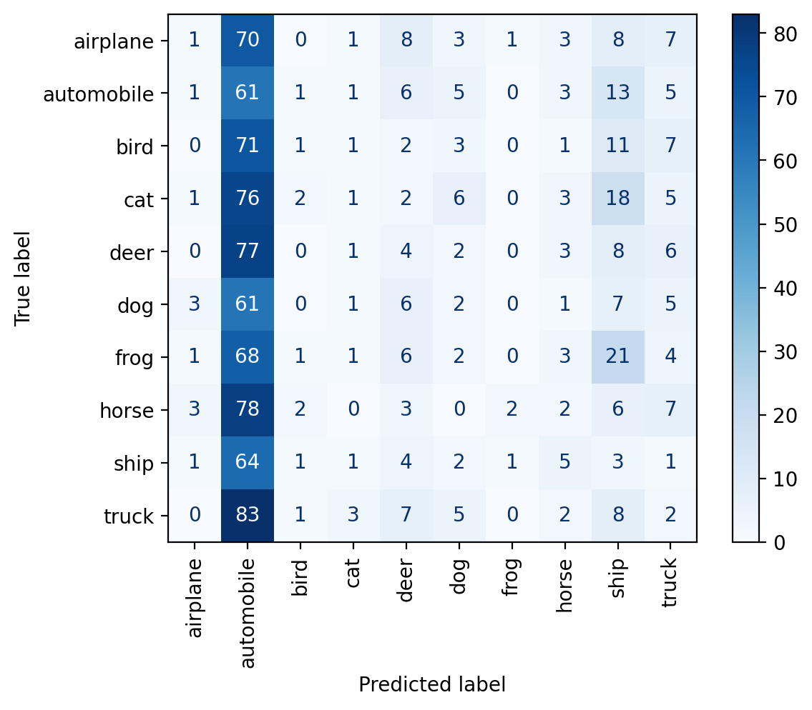
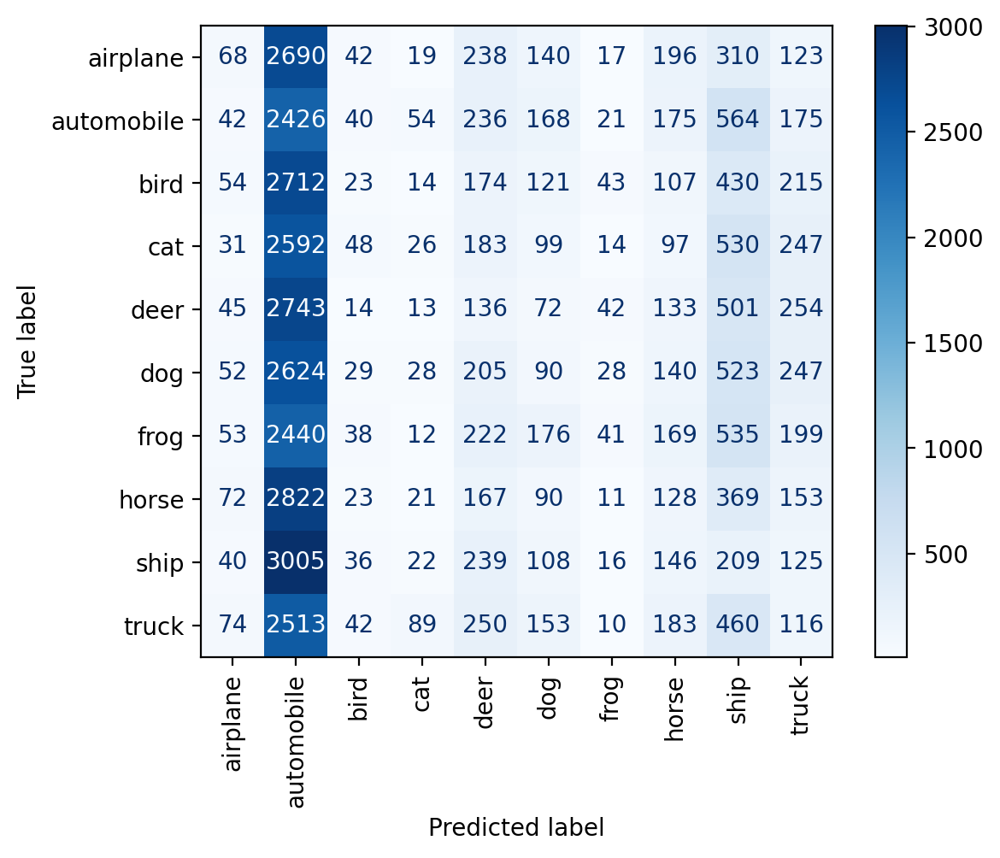
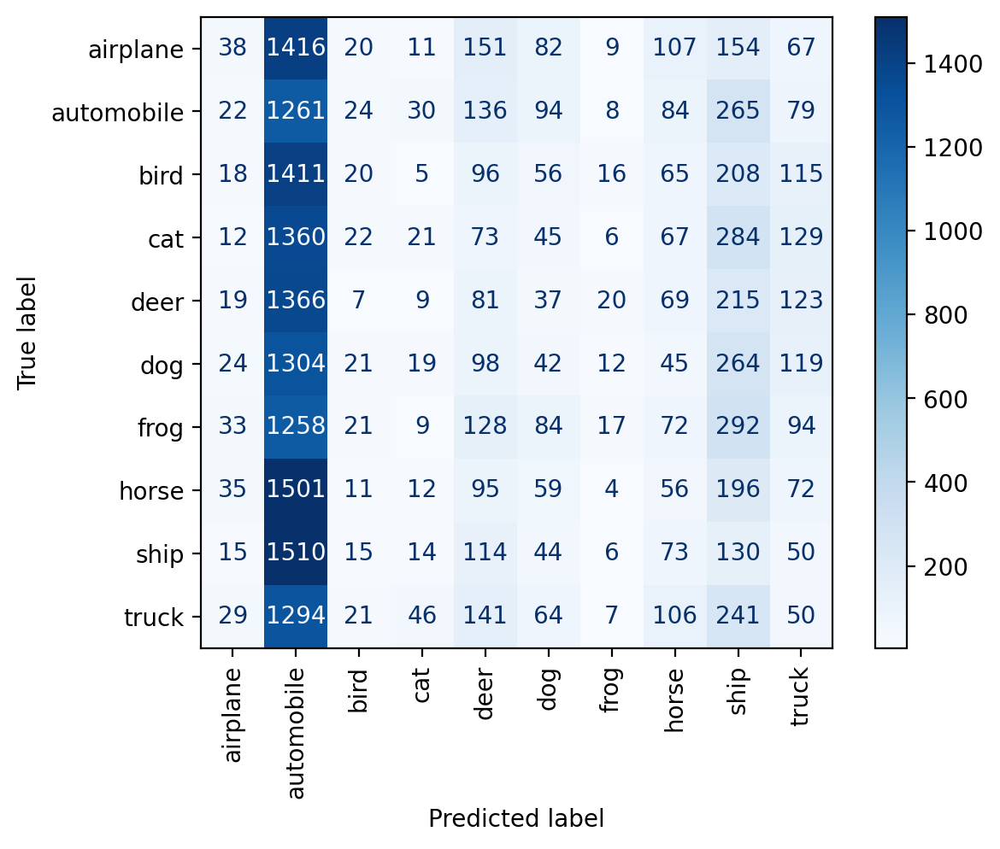
def viz_embeddings(net, X, y, device):
reducer = umap.UMAP()
with torch.no_grad():
emb = net.featurizer(X.to(device))
emb = emb.cpu().numpy()
emb = reducer.fit_transform(emb)
plt.figure(figsize=(4, 4))
plt.scatter(emb[:, 0], emb[:, 1], c=y.cpu().numpy(), cmap='tab10')
# Add a colorbar legend to mark color to class mapping
cb = plt.colorbar(boundaries=np.arange(11)-0.5)
cb.set_ticks(np.arange(10))
cb.set_ticklabels(dataset.classes)
plt.title("UMAP embeddings")
plt.tight_layout()
viz_embeddings(resnet, X[train_idx], y[train_idx], device)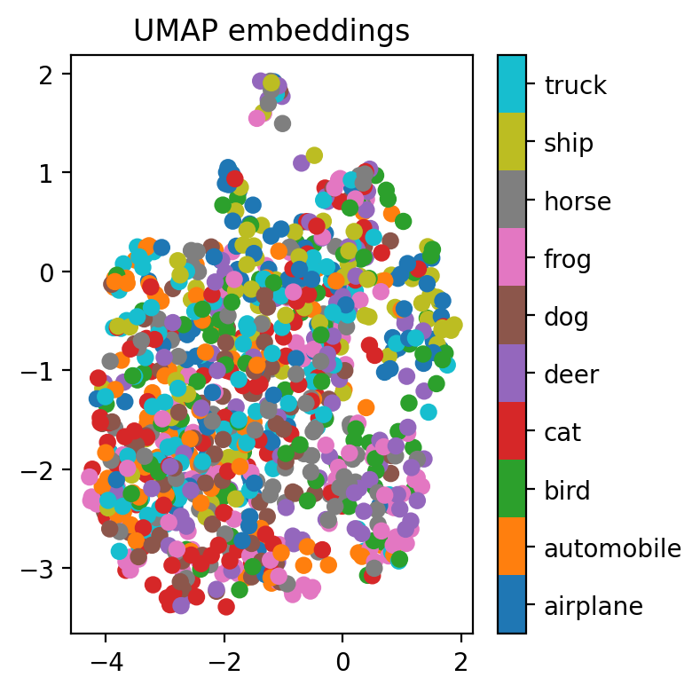
Train the model on train set
resnet = ResNetClassifier(models.resnet18, None, n_classes=10, activation=nn.GELU(), dropout=0.1).to(device)
iter_losses, epoch_losses = train_fn(resnet, X[train_idx], y[train_idx], nn.CrossEntropyLoss(), lr=3e-4,
batch_size=128, epochs=30, verbose=False)plt.plot(iter_losses)
plt.xlabel("Iteration")
plt.ylabel("Training loss")Text(0, 0.5, 'Training loss')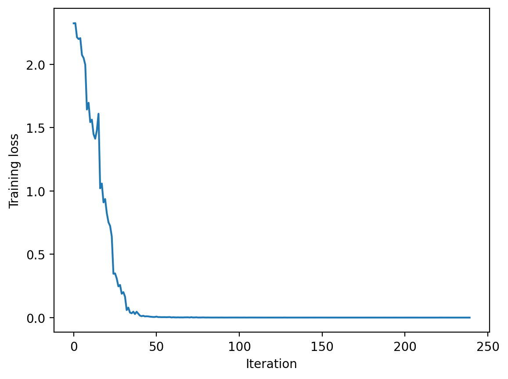
predict(resnet, dataset.classes, plot_confusion_matrix=True)train set accuracy: 100.00%
pool set accuracy: 35.95%
test set accuracy: 36.27%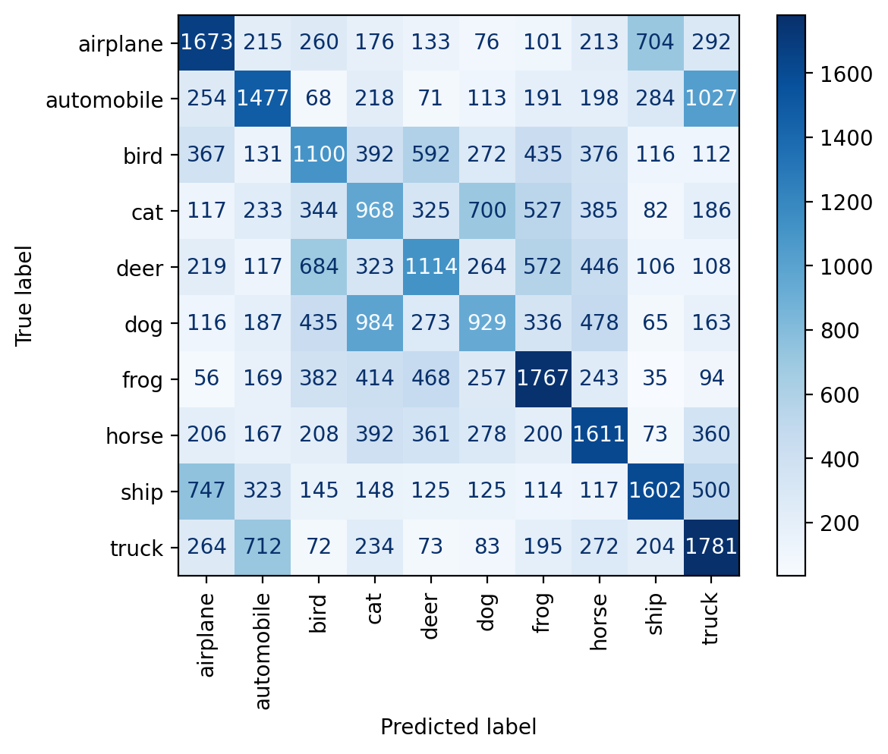
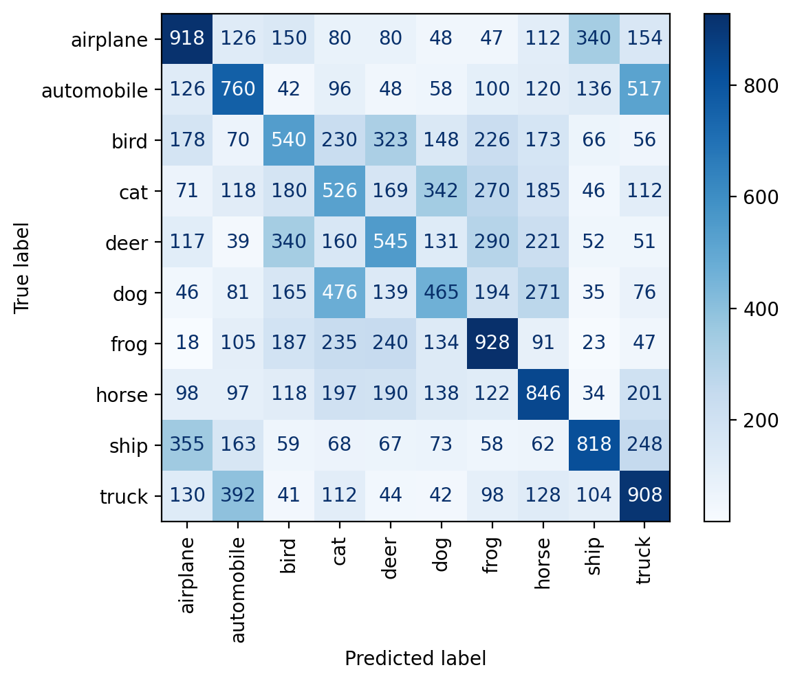
viz_embeddings(resnet, X[train_idx], y[train_idx], device)/home/nipun.batra/miniforge3/lib/python3.9/site-packages/sklearn/manifold/_spectral_embedding.py:273: UserWarning: Graph is not fully connected, spectral embedding may not work as expected.
warnings.warn(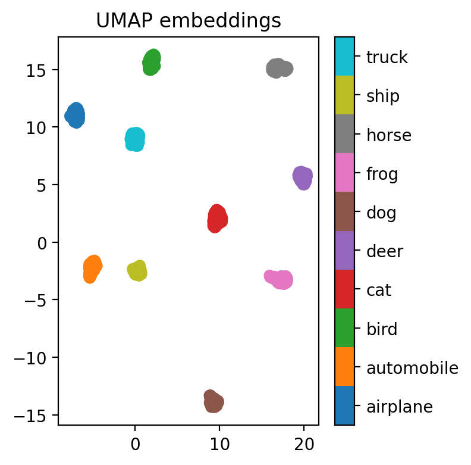
viz_embeddings(resnet, X[test_idx[:1000]], y[test_idx[:1000]], device)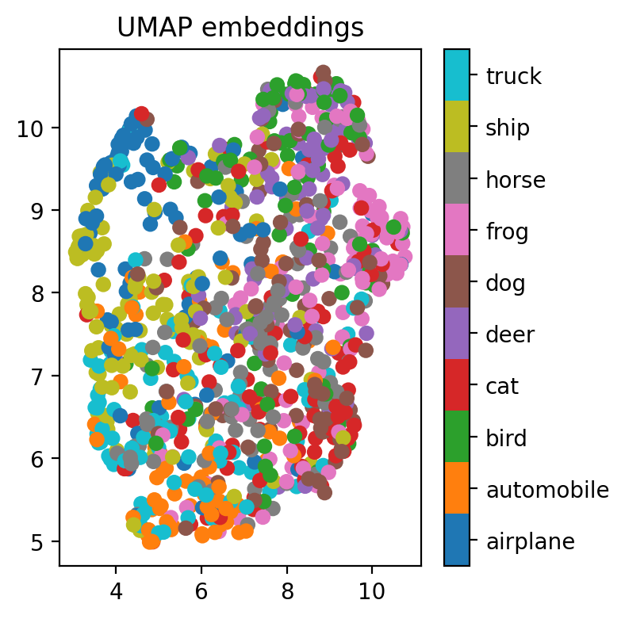
### Train on train + pool
train_plus_pool_idx = torch.cat([train_idx, pool_idx])
resnet = ResNetClassifier(models.resnet18, None, n_classes=10, activation=nn.GELU(), dropout=0.1).to(device)
iter_losses, epoch_losses = train_fn(resnet, X[train_plus_pool_idx], y[train_plus_pool_idx], loss_fn=nn.CrossEntropyLoss(),
lr=3e-4,
batch_size=1024, epochs=30)Loss: 1.311430: 100%|██████████| 40/40 [00:01<00:00, 34.22it/s]
Loss: 1.074545: 100%|██████████| 40/40 [00:01<00:00, 36.99it/s]
Loss: 1.028258: 100%|██████████| 40/40 [00:01<00:00, 36.88it/s]
Loss: 0.679134: 100%|██████████| 40/40 [00:01<00:00, 37.03it/s]
Loss: 0.573962: 100%|██████████| 40/40 [00:01<00:00, 36.61it/s]
Loss: 0.470612: 100%|██████████| 40/40 [00:01<00:00, 37.01it/s]
Loss: 0.579732: 100%|██████████| 40/40 [00:01<00:00, 36.57it/s]
Loss: 0.262016: 100%|██████████| 40/40 [00:01<00:00, 37.01it/s]
Loss: 0.147717: 100%|██████████| 40/40 [00:01<00:00, 36.54it/s]
Loss: 0.108952: 100%|██████████| 40/40 [00:01<00:00, 36.02it/s]
Loss: 0.271355: 100%|██████████| 40/40 [00:01<00:00, 36.75it/s]
Loss: 0.370208: 100%|██████████| 40/40 [00:01<00:00, 35.67it/s]
Loss: 0.304398: 100%|██████████| 40/40 [00:01<00:00, 36.01it/s]
Loss: 0.184816: 100%|██████████| 40/40 [00:01<00:00, 36.37it/s]
Loss: 0.196016: 100%|██████████| 40/40 [00:01<00:00, 35.36it/s]
Loss: 0.181180: 100%|██████████| 40/40 [00:01<00:00, 34.56it/s]
Loss: 0.196182: 100%|██████████| 40/40 [00:01<00:00, 35.60it/s]
Loss: 0.144379: 100%|██████████| 40/40 [00:01<00:00, 35.92it/s]
Loss: 0.047389: 100%|██████████| 40/40 [00:01<00:00, 35.78it/s]
Loss: 0.031721: 100%|██████████| 40/40 [00:01<00:00, 35.50it/s]
Loss: 0.071309: 100%|██████████| 40/40 [00:01<00:00, 35.90it/s]
Loss: 0.132249: 100%|██████████| 40/40 [00:01<00:00, 35.88it/s]
Loss: 0.064951: 100%|██████████| 40/40 [00:01<00:00, 35.89it/s]
Loss: 0.087784: 100%|██████████| 40/40 [00:01<00:00, 35.95it/s]
Loss: 0.022345: 100%|██████████| 40/40 [00:01<00:00, 35.38it/s]
Loss: 0.220102: 100%|██████████| 40/40 [00:01<00:00, 34.77it/s]
Loss: 0.058476: 100%|██████████| 40/40 [00:01<00:00, 35.88it/s]
Loss: 0.083048: 100%|██████████| 40/40 [00:01<00:00, 36.26it/s]
Loss: 0.047481: 100%|██████████| 40/40 [00:01<00:00, 35.44it/s]
Loss: 0.047544: 100%|██████████| 40/40 [00:01<00:00, 35.65it/s]Epoch 1: 1.6589520935058595
Epoch 2: 1.2343804992675782
Epoch 3: 1.0032470321655274
Epoch 4: 0.8050672988891602
Epoch 5: 0.6229847793579102
Epoch 6: 0.48343274230957034
Epoch 7: 0.3824925224304199
Epoch 8: 0.3308661190032959
Epoch 9: 0.19066958694458008
Epoch 10: 0.1531820728302002
Epoch 11: 0.13519002685546874
Epoch 12: 0.1659882785797119
Epoch 13: 0.23326843185424806
Epoch 14: 0.16760483856201172
Epoch 15: 0.09269110498428344
Epoch 16: 0.08953567190170288
Epoch 17: 0.10240967988967896
Epoch 18: 0.1157124849319458
Epoch 19: 0.08735885505676269
Epoch 20: 0.032301900148391724
Epoch 21: 0.02235677945613861
Epoch 22: 0.05257979347705841
Epoch 23: 0.06249353976249695
Epoch 24: 0.05699077892303467
Epoch 25: 0.0789616925239563
Epoch 26: 0.03884266901016235
Epoch 27: 0.10908802990913391
Epoch 28: 0.06660935344696045
Epoch 29: 0.042903441429138184
Epoch 30: 0.03823600392341614plt.plot(iter_losses)
plt.xlabel("Iteration")
plt.ylabel("Training loss")Text(0, 0.5, 'Training loss')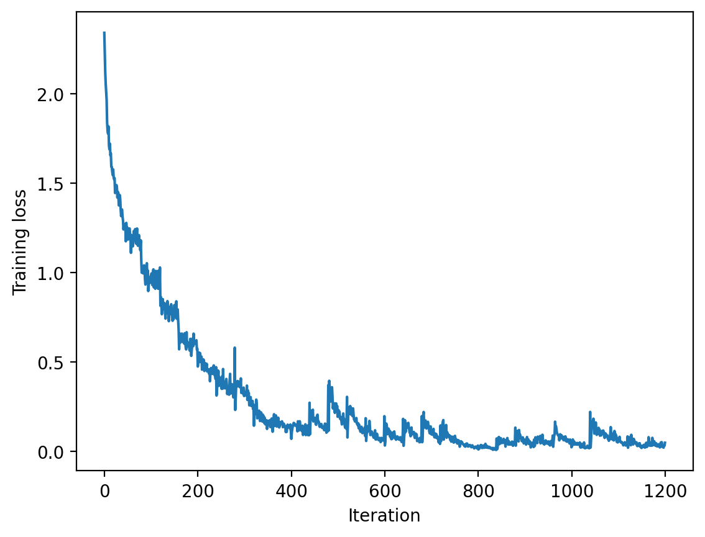
viz_embeddings(resnet, X[train_idx], y[train_idx], device)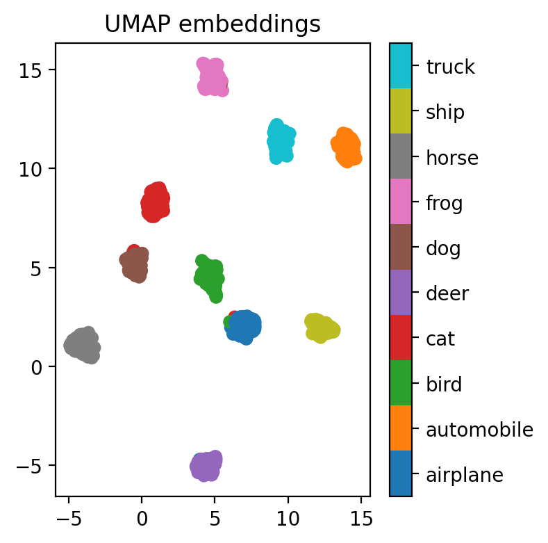
viz_embeddings(resnet, X[test_idx[:1000]], y[test_idx[:1000]], device)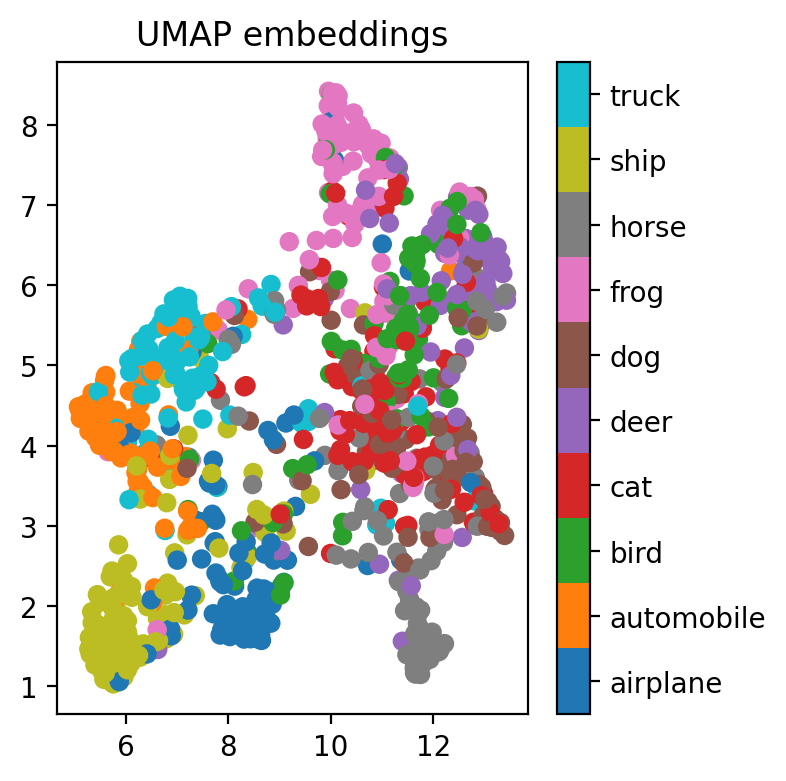
predict(resnet, dataset.classes, plot_confusion_matrix=True)train set accuracy: 99.10%
pool set accuracy: 99.58%
test set accuracy: 61.65%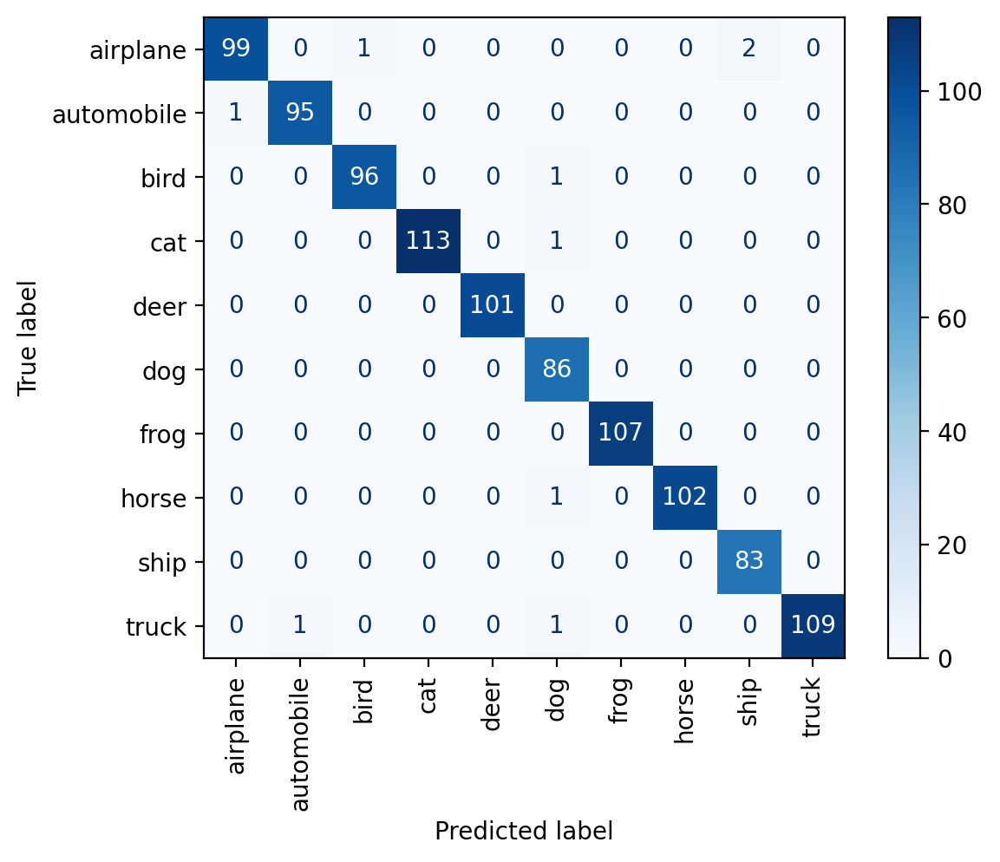
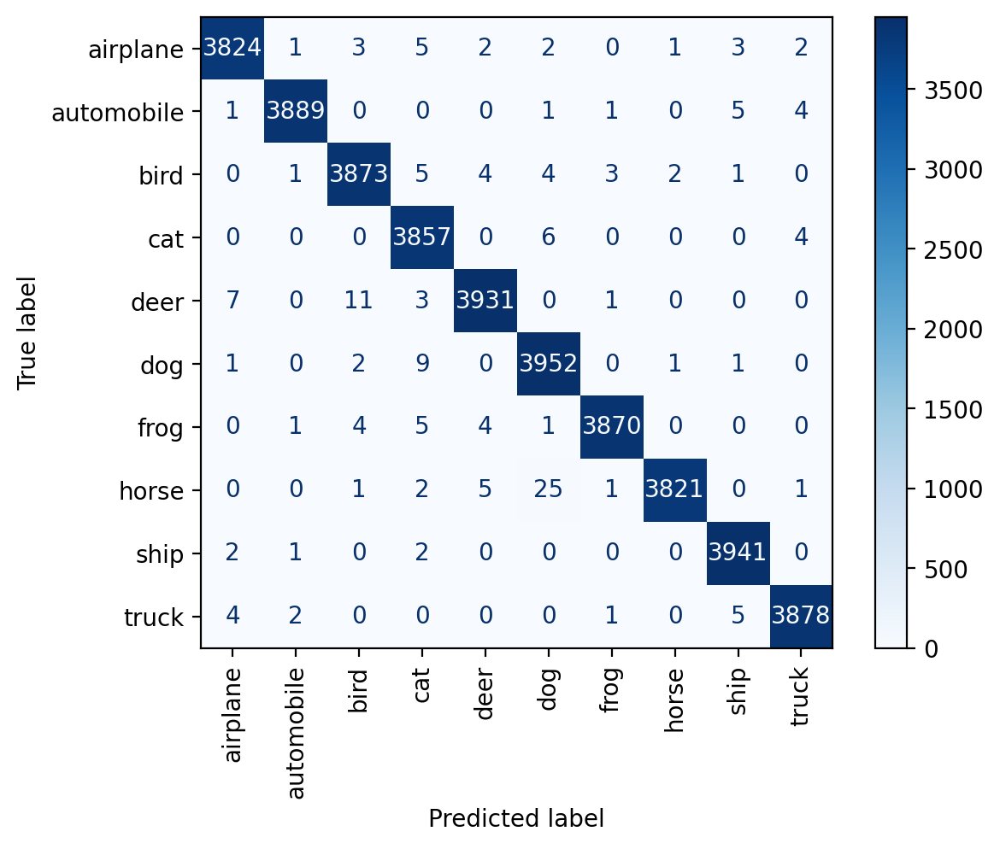
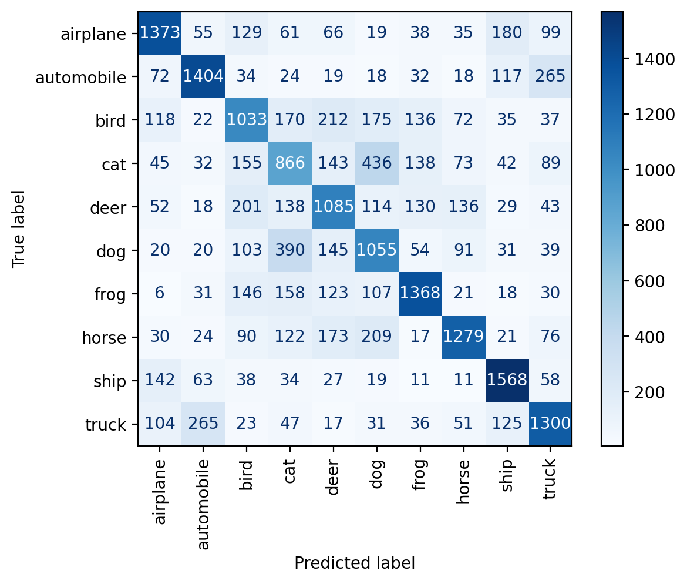
SSL
Task 1: Predict angle of rotation (0, 90, 180, 270) as a classification task
Create a dataset with rotated images and corresponding labels. We can now use a much larger dataset
X_train_plus_pool = torch.cat([X[train_idx], X[pool_idx]])
y_train_plus_pool = torch.cat([y[train_idx], y[pool_idx]])
X_train_plus_pool.shape, y_train_plus_pool.shape(torch.Size([40000, 3, 32, 32]), torch.Size([40000]))X_ssl = []
y_ssl = []
angles_map = {0:0, 90:1, 180:2, 270:3}
for angle_rot in angles_map.keys():
print(f"Angle: {angle_rot}")
X_rot = transforms.functional.rotate(X_train_plus_pool, angle_rot)
X_ssl.append(X_rot)
y_ssl.append(torch.tensor([angles_map[angle_rot]]*len(X_rot)))
X_ssl = torch.cat(X_ssl)
y_ssl = torch.cat(y_ssl)Angle: 0
Angle: 90
Angle: 180
Angle: 270X_ssl.shape, y_ssl.shape(torch.Size([160000, 3, 32, 32]), torch.Size([160000]))# Plot same image rotated at different angles
def plot_ssl(img_id):
plt.figure(figsize=(3, 3))
offset = len(X_train_plus_pool)
for i in range(4):
plt.subplot(2, 2, i+1)
plt.imshow(torch.einsum("chw->hwc", X_ssl[offset*i + img_id]))
plt.axis('off')
plt.title(f"Class: {angles_map[i*90]}\n Angle: {i*90}")
plt.tight_layout()
plot_ssl(2)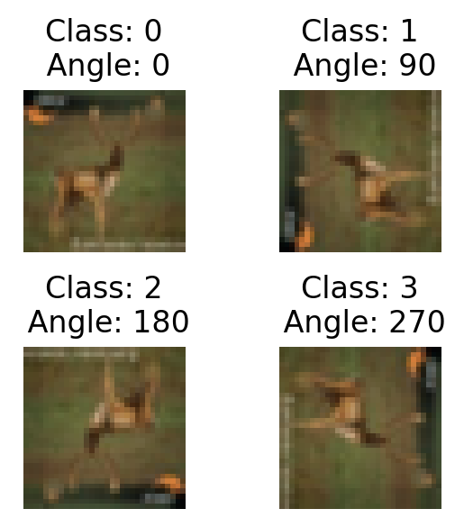
ssl_angle = ResNetClassifier(models.resnet18, None, n_classes=4, activation=nn.GELU(), dropout=0.1).to(device)iter_losses, epoch_losses = train_fn(ssl_angle, X_ssl, y_ssl, lr=3e-4, loss_fn=nn.CrossEntropyLoss(),
batch_size=1024, epochs=20)Loss: 0.945101: 100%|██████████| 157/157 [00:04<00:00, 35.35it/s]
Loss: 0.785275: 100%|██████████| 157/157 [00:04<00:00, 35.88it/s]
Loss: 0.644941: 100%|██████████| 157/157 [00:04<00:00, 35.64it/s]
Loss: 0.697314: 100%|██████████| 157/157 [00:04<00:00, 36.29it/s]
Loss: 0.578679: 100%|██████████| 157/157 [00:04<00:00, 35.66it/s]
Loss: 0.478466: 100%|██████████| 157/157 [00:04<00:00, 36.11it/s]
Loss: 0.466891: 100%|██████████| 157/157 [00:04<00:00, 35.93it/s]
Loss: 0.436392: 100%|██████████| 157/157 [00:04<00:00, 35.65it/s]
Loss: 0.302828: 100%|██████████| 157/157 [00:04<00:00, 36.11it/s]
Loss: 0.226936: 100%|██████████| 157/157 [00:04<00:00, 35.73it/s]
Loss: 0.260345: 100%|██████████| 157/157 [00:04<00:00, 35.70it/s]
Loss: 0.136557: 100%|██████████| 157/157 [00:04<00:00, 36.13it/s]
Loss: 0.214188: 100%|██████████| 157/157 [00:04<00:00, 35.74it/s]
Loss: 0.114707: 100%|██████████| 157/157 [00:04<00:00, 35.61it/s]
Loss: 0.100094: 100%|██████████| 157/157 [00:04<00:00, 35.93it/s]
Loss: 0.114667: 100%|██████████| 157/157 [00:04<00:00, 36.11it/s]
Loss: 0.088765: 100%|██████████| 157/157 [00:04<00:00, 36.15it/s]
Loss: 0.094059: 100%|██████████| 157/157 [00:04<00:00, 36.16it/s]
Loss: 0.135386: 100%|██████████| 157/157 [00:04<00:00, 34.21it/s]
Loss: 0.073386: 100%|██████████| 157/157 [00:04<00:00, 35.75it/s]Epoch 1: 0.9923952384948731
Epoch 2: 0.8178635284423829
Epoch 3: 0.7248399837493896
Epoch 4: 0.644944263458252
Epoch 5: 0.5666926818847656
Epoch 6: 0.4871123765945435
Epoch 7: 0.4118640880584717
Epoch 8: 0.3425796222686768
Epoch 9: 0.2795945789337158
Epoch 10: 0.2271963834762573
Epoch 11: 0.18415976438522338
Epoch 12: 0.15323887557983398
Epoch 13: 0.13012397813796997
Epoch 14: 0.10969336915016174
Epoch 15: 0.09902867212295532
Epoch 16: 0.08491913187503815
Epoch 17: 0.07862492105960846
Epoch 18: 0.0721992644071579
Epoch 19: 0.068406194627285
Epoch 20: 0.061716662764549256plt.plot(iter_losses)
plt.xlabel("Iteration")
plt.ylabel("Training loss")Text(0, 0.5, 'Training loss')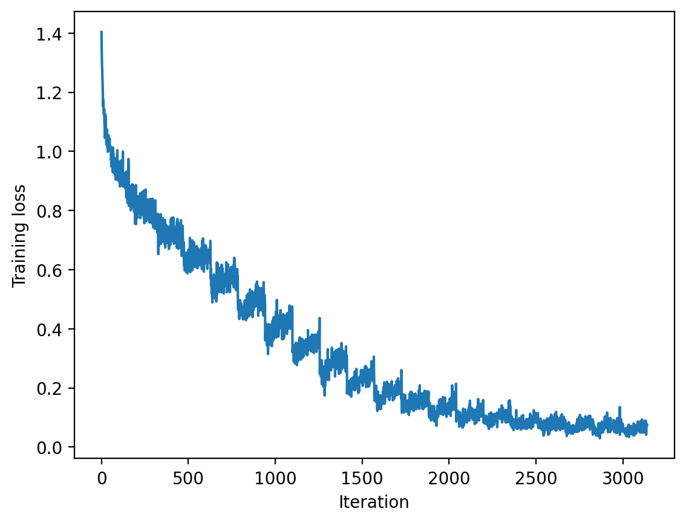
# Visualise the embeddings of the SSL model trained on angles dataset
# (but wrt original 10 classes)
viz_embeddings(ssl_angle, X[train_idx], y[train_idx], device)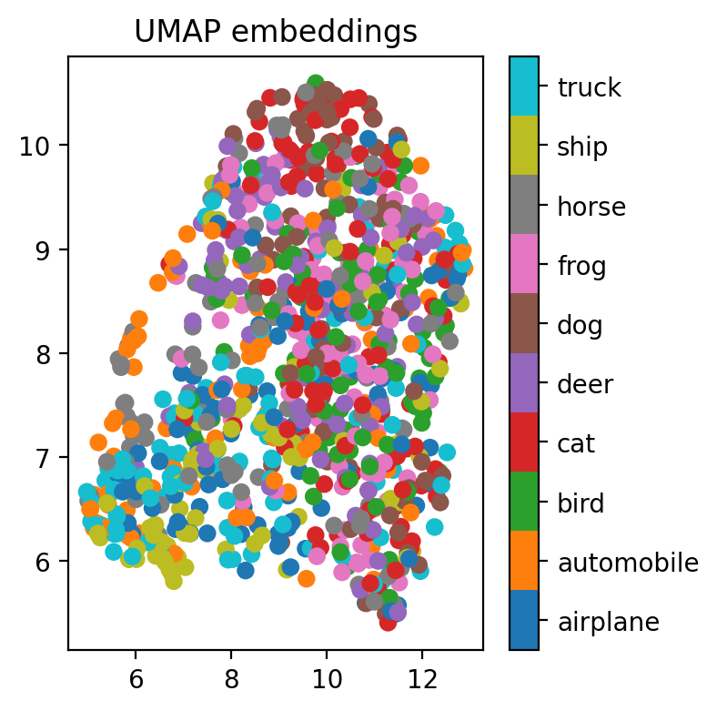
# Now, we can use the features from SSLAngle model to train the classifier on the original data
net_pretrained = ResNetClassifier(models.resnet18, None, n_classes=10, activation=nn.GELU(), dropout=0.1).to(device)
net_pretrained.featurizer.load_state_dict(ssl_angle.featurizer.state_dict())
iter_losses, epoch_losses = train_fn(net_pretrained, X[train_idx], y[train_idx], nn.CrossEntropyLoss(), lr=3e-4, epochs=50, batch_size=128, verbose=False)plt.plot(iter_losses)
plt.xlabel("Iteration")
plt.ylabel("Training loss")Text(0, 0.5, 'Training loss')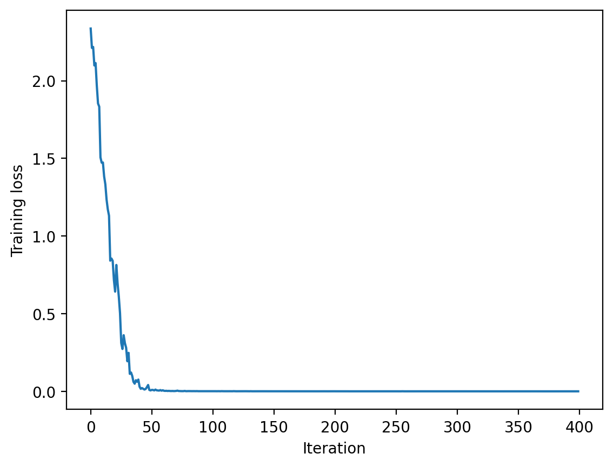
viz_embeddings(net_pretrained, X[train_idx], y[train_idx], device)/home/nipun.batra/miniforge3/lib/python3.9/site-packages/sklearn/manifold/_spectral_embedding.py:273: UserWarning: Graph is not fully connected, spectral embedding may not work as expected.
warnings.warn(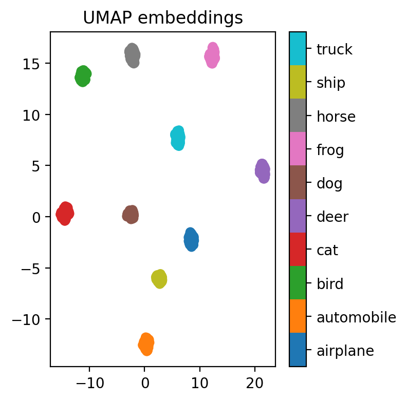
viz_embeddings(net_pretrained, X[test_idx[:1000]], y[test_idx[:1000]], device)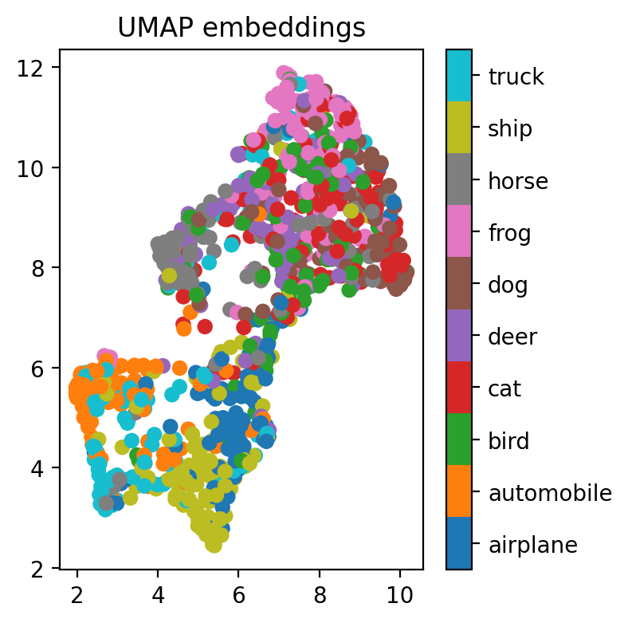
predict(net_pretrained, dataset.classes, plot_confusion_matrix=True)train set accuracy: 100.00%
pool set accuracy: 47.94%
test set accuracy: 47.57%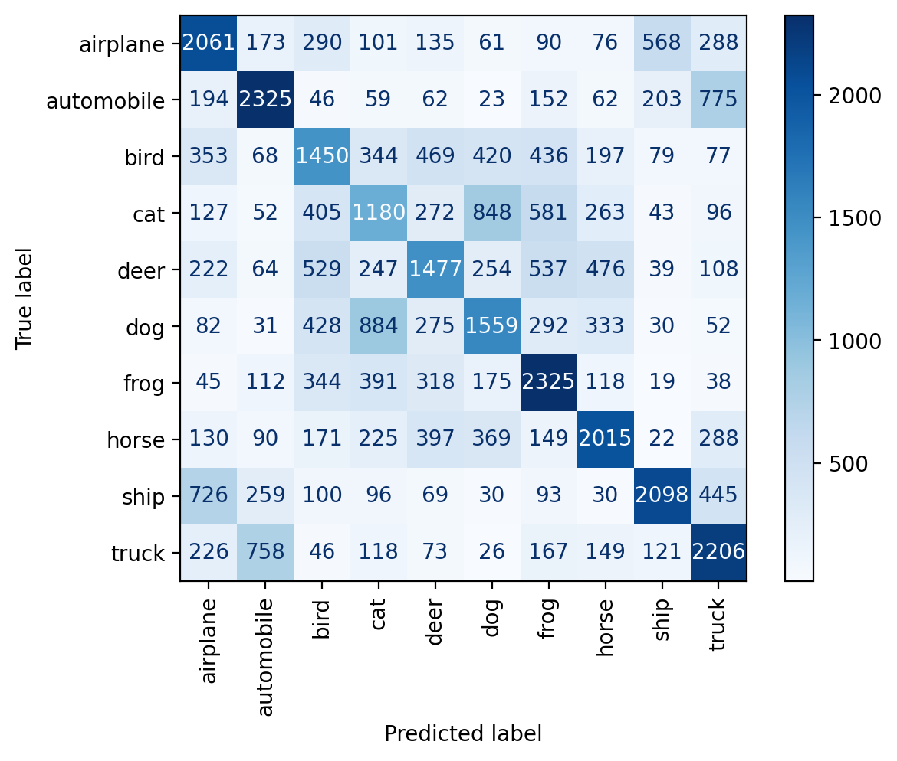
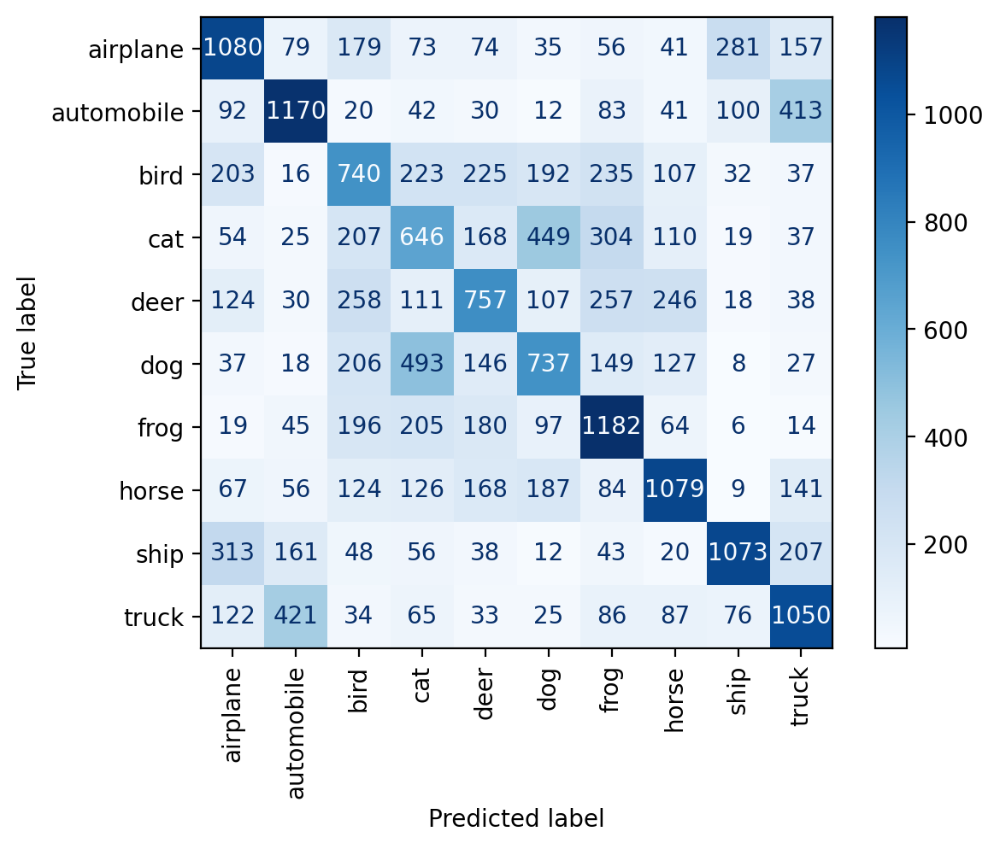
Summary of the test set performance
- Untrained model: 9%
- Train on 1000 labeled samples (train set): 36%
- Train on 1000 labeled samples + 39000 label samples (pool set): 62%
- Train on SSL task + Finetune on 1000 labeled samples: 47%